Trong đó chúng ta coi việc học như một dạng suy diễn không chắc chắn từ các quan sát (observations), và xây dựng các mô hình để biểu diễn thế giới không chắc chắn.
Chương 12 đã chỉ ra sự phổ biến của sự không chắc chắn (uncertainty) trong các môi trường thực tế. Các tác tử (agents) có thể xử lý sự không chắc chắn bằng cách sử dụng các phương pháp của lý thuyết xác suất và lý thuyết quyết định, nhưng trước tiên chúng phải học (learn) các lý thuyết xác suất của chúng về thế giới từ kinh nghiệm. Chương này giải thích cách chúng có thể làm điều đó, bằng cách công thức hóa bản thân tác vụ học tập như một quá trình của suy diễn xác suất (probabilistic inference) (Mục 21.1). Chúng ta sẽ thấy rằng quan điểm Bayes (Bayesian view) về học tập là cực kỳ mạnh mẽ, cung cấp các giải pháp tổng quát cho các vấn đề về nhiễu (noise), khớp quá mức (overfitting), và dự đoán tối ưu (optimal prediction). Nó cũng xem xét thực tế rằng một tác tử không toàn tri (less-than-omniscient agent) không bao giờ có thể chắc chắn hoàn toàn về việc lý thuyết nào về thế giới là đúng, nhưng vẫn phải đưa ra các quyết định bằng cách sử dụng một số lý thuyết nào đó về thế giới.
Chúng ta sẽ mô tả các phương pháp để học các mô hình xác suất—chủ yếu là mạng Bayes (Bayesian networks)—trong Mục 21.2 và 21.3. Một số tài liệu trong chương này mang tính toán học khá cao, mặc dù các bài học tổng quát có thể được hiểu mà không cần đi sâu vào các chi tiết. Sẽ rất hữu ích nếu người đọc xem lại Chương 12 và 13 và xem lướt qua Phụ lục A.
Các khái niệm chính trong chương này, cũng giống như trong Chương 19, là dữ liệu (data) và các giả thuyết (hypotheses). Ở đây, dữ liệu là bằng chứng (evidence)—tức là, sự cụ thể hóa của một số hoặc tất cả các biến ngẫu nhiên mô tả miền ứng dụng (domain). Các giả thuyết trong chương này là các lý thuyết xác suất về cách thức hoạt động của miền ứng dụng, bao gồm các lý thuyết logic như một trường hợp đặc biệt.
Hãy xem xét một ví dụ đơn giản. Kẹo bất ngờ yêu thích của chúng ta có hai hương vị: anh đào (cherry - ngon tuyệt) và chanh (lime - ôi thôi). Nhà sản xuất có một khiếu hài hước kỳ lạ và bọc mỗi viên kẹo trong một vỏ bọc mờ đục giống nhau, bất kể hương vị. Kẹo được bán trong các túi rất lớn, trong đó có năm loại kẹo đã biết—lại một lần nữa, không thể phân biệt từ bên ngoài:
Giả sử có một túi kẹo mới, biến ngẫu nhiên $H$ (viết tắt của hypothesis - giả thuyết) biểu thị loại túi kẹo, với các giá trị có thể có từ $h_1$ đến $h_5$. Tất nhiên, $H$ không thể quan sát được trực tiếp. Khi các viên kẹo được mở ra và kiểm tra, dữ liệu sẽ được tiết lộ—$D_1, D_2, \ldots, D_N$, trong đó mỗi $D_i$ là một biến ngẫu nhiên với các giá trị có thể có là anh đào (cherry) và chanh (lime). Nhiệm vụ cơ bản mà tác tử phải đối mặt là dự đoán hương vị của viên kẹo tiếp theo. Mặc dù có vẻ tầm thường, kịch bản này phục vụ để giới thiệu nhiều vấn đề lớn yếu. Tác tử thực sự cần suy diễn ra một lý thuyết về thế giới của nó, dù là một lý thuyết rất đơn giản.
Học Bayes (Bayesian learning) đơn giản chỉ là tính toán xác suất của mỗi giả thuyết, dựa trên dữ liệu, và đưa ra các dự đoán dựa trên cơ sở đó. Tức là, các dự đoán được thực hiện bằng cách sử dụng tất cả các giả thuyết, được gia quyền (weighted) bởi xác suất của chúng, thay vì chỉ sử dụng một giả thuyết "tốt nhất" duy nhất. Theo cách này, việc học được quy về suy diễn xác suất.
Gọi $\mathbf{D}$ đại diện cho tất cả dữ liệu, với giá trị quan sát được là $\mathbf{d}$. Các đại lượng cốt lõi trong phương pháp Bayes là xác suất tiên nghiệm của giả thuyết (hypothesis prior), $P(h_i)$, và khả năng (likelihood) của dữ liệu dưới mỗi giả thuyết, $P(\mathbf{d}|h_i)$. Xác suất của mỗi giả thuyết được tính bằng định lý Bayes (Bayes' rule):
$$P(h_i|\mathbf{d}) = \alpha P(\mathbf{d}|h_i)P(h_i)$$ (21.1)
Bây giờ, giả sử chúng ta muốn đưa ra một dự đoán về một đại lượng chưa biết $X$. Khi đó chúng ta có:
$$P(X|\mathbf{d}) = \sum_i P(X|h_i)P(h_i|\mathbf{d})$$ (21.2)
trong đó mỗi giả thuyết xác định một phân phối xác suất trên $X$. Phương trình này cho thấy rằng các dự đoán là mức trung bình có trọng số (weighted averages) trên các dự đoán của các giả thuyết cá thể, trong đó trọng số $P(h_i|\mathbf{d})$ tỷ lệ thuận với xác suất tiên nghiệm của $h_i$ và mức độ khớp của nó với dữ liệu, theo Phương trình (21.1). Bản thân các giả thuyết về cơ bản đóng vai trò là "các trung gian" giữa dữ liệu thô và các dự đoán.
Đối với ví dụ về kẹo của chúng ta, chúng ta sẽ tạm thời giả định rằng phân phối tiên nghiệm trên $h_1, \ldots, h_5$ được cho bởi $\langle 0.1, 0.2, 0.4, 0.2, 0.1 \rangle$, đúng như nhà sản xuất đã quảng cáo. Khả năng của dữ liệu được tính toán dựa trên giả định rằng các quan sát là độc lập và cùng phân phối (i.i.d.), do đó:
$$P(\mathbf{d}|h_i) = \prod_j P(d_j|h_i)$$ (21.3)
Ví dụ, giả sử cái túi đó thực sự là một túi toàn vị chanh ($h_5$) và 10 viên kẹo đầu tiên đều là chanh; thì $P(\mathbf{d}|h_3)$ là $0.5^{10}$, bởi vì một nửa số kẹo trong túi $h_3$ là vị chanh.
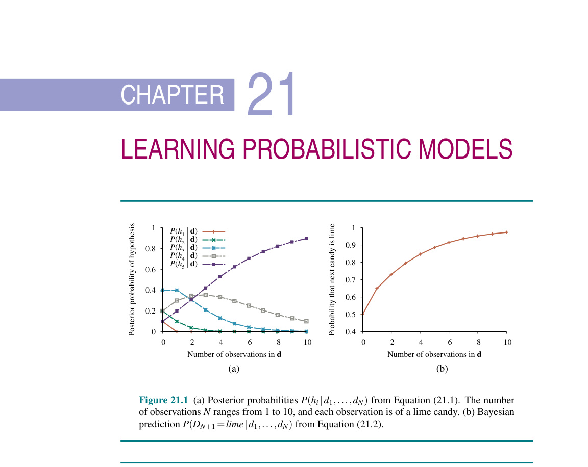
Ví dụ này cho thấy rằng dự đoán Bayes cuối cùng sẽ đồng thuận với giả thuyết thực sự. Đây là đặc trưng của học Bayes. Đối với bất kỳ tiên nghiệm cố định nào không loại trừ giả thuyết thực sự, xác suất hậu nghiệm của bất kỳ giả thuyết sai nào cuối cùng sẽ biến mất (tiến về 0), theo những điều kiện kỹ thuật nhất định. Điều này xảy ra đơn giản là vì xác suất của việc tạo ra dữ liệu "không mang tính đặc trưng" vô thời hạn là nhỏ đến mức biến mất. (Điểm này tương tự như một điểm đã được nêu trong cuộc thảo luận về học PAC ở Chương 19). Quan trọng hơn, dự đoán Bayes là tối ưu (optimal), cho dù tập dữ liệu nhỏ hay lớn. Dựa trên phân phối tiên nghiệm của giả thuyết, bất kỳ dự đoán nào khác đều được kỳ vọng là sẽ có số lần chính xác thấp hơn.
Sự tối ưu của học Bayes tất nhiên cũng có cái giá của nó. Đối với các bài toán học máy thực tế, không gian giả thuyết thường rất lớn hoặc vô hạn, như chúng ta đã thấy trong Chương 19. Trong một số trường hợp, phép tính tổng trong Phương trình (21.2) (hoặc tích phân, trong trường hợp liên tục) có thể được tính toán một cách xử lý được, nhưng trong hầu hết các trường hợp, chúng ta phải sử dụng đến các phương pháp xấp xỉ (approximate) hoặc đơn giản hóa (simplified).
Một phương pháp xấp xỉ rất phổ biến—một phương pháp thường được áp dụng trong khoa học—là đưa ra các dự đoán dựa trên một giả thuyết khả dĩ nhất duy nhất—tức là, một giả thuyết $h_i$ làm cực đại hóa $P(h_i|\mathbf{d})$. Điều này thường được gọi là giả thuyết hậu nghiệm cực đại (maximum a posteriori) hay giả thuyết MAP.
Các dự đoán được thực hiện theo giả thuyết MAP $h_{MAP}$ xấp xỉ với phương pháp Bayes ở mức độ $P(X|\mathbf{d}) \approx P(X|h_{MAP})$. Trong ví dụ về kẹo của chúng ta, $h_{MAP} = h_5$ sau ba viên kẹo chanh liên tiếp, do đó, bộ học MAP sau đó dự đoán rằng viên kẹo thứ tư là vị chanh với xác suất 1.0—một dự đoán nguy hiểm hơn nhiều so với dự đoán Bayes là 0.8 được hiển thị trong Hình 21.1(b). Khi có nhiều dữ liệu hơn, các dự đoán MAP và Bayes trở nên gần nhau hơn, bởi vì các đối thủ cạnh tranh với giả thuyết MAP ngày càng trở nên kém khả dĩ hơn.
Mặc dù ví dụ này không cho thấy điều đó, nhưng việc tìm kiếm các giả thuyết MAP thường dễ dàng hơn nhiều so với việc học Bayes, bởi vì nó đòi hỏi phải giải quyết một bài toán tối ưu hóa thay vì một bài toán tính tổng (hoặc tích phân) lớn.
Trong cả học Bayes và học MAP, xác suất tiên nghiệm của giả thuyết $P(h_i)$ đóng một vai trò quan trọng. Chúng ta đã thấy trong Chương 19 rằng hiện tượng khớp quá mức (overfitting) có thể xảy ra khi không gian giả thuyết quá biểu cảm (expressive), tức là, khi nó chứa nhiều giả thuyết khớp tốt với tập dữ liệu. Các phương pháp học Bayes và MAP sử dụng phân phối tiên nghiệm để phạt (penalize) sự phức tạp. Thông thường, các giả thuyết phức tạp hơn có xác suất tiên nghiệm thấp hơn—một phần vì có quá nhiều giả thuyết như vậy. Mặt khác, các giả thuyết phức tạp hơn có khả năng khớp dữ liệu tốt hơn. (Trong trường hợp cực đoan, một bảng tra cứu có thể tái tạo lại dữ liệu một cách chính xác). Do đó, phân phối tiên nghiệm của giả thuyết thể hiện sự đánh đổi (tradeoff) giữa độ phức tạp của một giả thuyết và mức độ khớp của nó với dữ liệu.
Chúng ta có thể thấy tác động của sự đánh đổi này một cách rõ ràng nhất trong trường hợp logic, trong đó không gian giả thuyết $H$ chỉ chứa các giả thuyết tất định (chẳng hạn như $h_1$, giả thuyết nói rằng mọi viên kẹo đều là vị anh đào). Trong trường hợp đó, $P(\mathbf{d}|h_i)$ bằng 1 nếu $h_i$ nhất quán với dữ liệu và bằng 0 nếu ngược lại. Nhìn vào Phương trình (21.1), chúng ta thấy rằng $h_{MAP}$ khi đó sẽ là lý thuyết logic đơn giản nhất nhất quán với dữ liệu. Do đó, học hậu nghiệm cực đại (MAP learning) cung cấp một sự thể hiện tự nhiên của Nguyên lý dao cạo Ockham (Ockham's razor).
Một góc nhìn sâu sắc khác về sự đánh đổi giữa độ phức tạp và mức độ khớp đạt được bằng cách lấy logarit của Phương trình (21.1). Việc chọn $h_{MAP}$ để làm cực đại hóa $P(\mathbf{d}|h_i)P(h_i)$ tương đương với việc tối thiểu hóa
$$-\log_2 P(\mathbf{d}|h_i) - \log_2 P(h_i)$$
Sử dụng mối liên hệ giữa mã hóa thông tin (information encoding) và xác suất mà chúng ta đã giới thiệu trong Mục 19.3.3, chúng ta thấy rằng số hạng $-\log_2 P(h_i)$ bằng số bit cần thiết để chỉ định giả thuyết $h_i$. Hơn nữa, $-\log_2 P(\mathbf{d}|h_i)$ là số bit bổ sung cần thiết để chỉ định dữ liệu, cho trước giả thuyết. (Để hiểu điều này, hãy xem xét rằng sẽ không cần bit nào nếu giả thuyết dự đoán dữ liệu một cách chính xác—giống như $h_5$ và chuỗi kẹo toàn vị chanh—và $-\log_2 1 = 0$). Do đó, học MAP là việc chọn giả thuyết cung cấp sự nén (compression) tối đa của dữ liệu. Nhiệm vụ tương tự được giải quyết trực tiếp hơn bằng phương pháp học độ dài mô tả tối thiểu (minimum description length), hoặc MDL. Trong khi học MAP thể hiện sự đơn giản bằng cách gán xác suất cao hơn cho các giả thuyết đơn giản hơn, MDL thể hiện điều đó trực tiếp bằng cách đếm các bit trong một mã hóa nhị phân của các giả thuyết và dữ liệu.
Một sự đơn giản hóa cuối cùng được cung cấp bằng cách giả định một phân phối tiên nghiệm đồng đều (uniform prior) trên không gian các giả thuyết. Trong trường hợp đó, học MAP thu gọn lại thành việc chọn một $h_i$ làm cực đại hóa $P(\mathbf{d}|h_i)$. Đây được gọi là một giả thuyết hợp lý cực đại (maximum-likelihood hypothesis), $h_{ML}$. Học hợp lý cực đại (Maximum-likelihood learning) rất phổ biến trong thống kê, một kỷ luật mà trong đó nhiều nhà nghiên cứu không tin tưởng vào bản chất chủ quan của các tiên nghiệm giả thuyết (hypothesis priors). Đó là một cách tiếp cận hợp lý khi không có lý do gì để ưu tiên một giả thuyết hơn giả thuyết khác theo cách tiên nghiệm—ví dụ: khi tất cả các giả thuyết đều phức tạp như nhau.
Khi tập dữ liệu lớn, phân phối tiên nghiệm trên các giả thuyết trở nên ít quan trọng hơn—bằng chứng từ dữ liệu đủ mạnh để lấn át phân phối tiên nghiệm trên các giả thuyết. Điều đó có nghĩa là học hợp lý cực đại là một phép xấp xỉ tốt cho học Bayes và học MAP với các tập dữ liệu lớn, nhưng nó có những vấn đề (như chúng ta sẽ thấy) với các tập dữ liệu nhỏ.
Nhiệm vụ tổng quát của việc học một mô hình xác suất, cho trước dữ liệu được giả định là được sinh ra từ mô hình đó, được gọi là ước lượng mật độ (density estimation). (Thuật ngữ này ban đầu áp dụng cho các hàm mật độ xác suất đối với các biến liên tục, nhưng hiện nay nó cũng được sử dụng cho các phân phối rời rạc). Ước lượng mật độ là một hình thức học không giám sát (unsupervised learning). Mục này đề cập đến trường hợp đơn giản nhất, nơi chúng ta có dữ liệu đầy đủ (complete data). Dữ liệu là đầy đủ khi mỗi điểm dữ liệu chứa các giá trị cho mọi biến trong mô hình xác suất đang được học. Chúng ta tập trung vào học tham số (parameter learning)—tìm các tham số số (numerical parameters) cho một mô hình xác suất có cấu trúc cố định. Ví dụ, chúng ta có thể quan tâm đến việc học các xác suất có điều kiện trong một mạng Bayes có cấu trúc đã cho. Chúng ta cũng sẽ xem xét ngắn gọn vấn đề học cấu trúc và ước lượng mật độ phi tham số (nonparametric density estimation).
Giả sử chúng ta mua một túi kẹo chanh và anh đào từ một nhà sản xuất mới mà tỷ lệ các hương vị là hoàn toàn không biết; tỷ lệ của vị anh đào có thể nằm bất kỳ đâu trong khoảng từ 0 đến 1. Trong trường hợp đó, chúng ta có một sự liên tục (continuum) các giả thuyết. Tham số trong trường hợp này, mà chúng ta gọi là $\theta$, là tỷ lệ kẹo vị anh đào, và giả thuyết là $h_\theta$. (Tỷ lệ kẹo vị chanh chỉ là $1 - \theta$). Nếu chúng ta giả định rằng tất cả các tỷ lệ đều có khả năng như nhau theo một cách tiên nghiệm, thì một cách tiếp cận hợp lý cực đại là phù hợp. Nếu chúng ta mô hình hóa tình huống bằng một mạng Bayes, chúng ta chỉ cần một biến ngẫu nhiên, $Flavor$ (hương vị của một viên kẹo được chọn ngẫu nhiên từ túi). Nó có các giá trị là $cherry$ (anh đào) và $lime$ (chanh), trong đó xác suất của $cherry$ là $\theta$ (xem
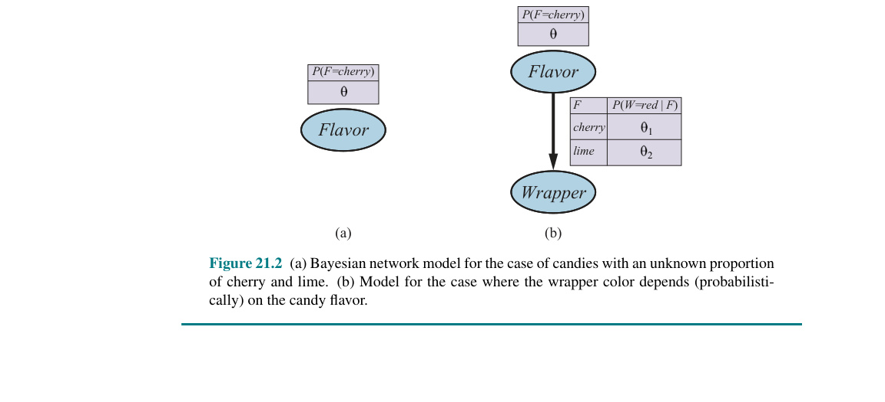
$$P(\mathbf{d}|h_\theta) = \prod_{j=1}^N P(d_j|h_\theta) = \theta^c (1 - \theta)^\ell$$
Giả thuyết hợp lý cực đại (maximum-likelihood hypothesis) được cho bởi giá trị của $\theta$ làm cực đại hóa biểu thức này. Bởi vì hàm log là hàm đơn điệu, giá trị tương tự có thể đạt được bằng cách cực đại hóa log likelihood (log của khả năng) thay thế:
$$L(\mathbf{d}|h_\theta) = \log P(\mathbf{d}|h_\theta) = \sum_{j=1}^N \log P(d_j|h_\theta) = c \log \theta + \ell \log (1 - \theta)$$
(Bằng cách lấy logarit, chúng ta giảm tích thành một tổng trên dữ liệu, điều này thường dễ để làm cực đại hóa hơn). Để tìm giá trị hợp lý cực đại của $\theta$, chúng ta lấy đạo hàm của $L$ theo $\theta$ và cho biểu thức kết quả bằng 0:
$$\frac{\partial L(\mathbf{d}|h_\theta)}{\partial \theta} = \frac{c}{\theta} - \frac{\ell}{1 - \theta} = 0 \implies \theta = \frac{c}{c + \ell} = \frac{c}{N}$$
Nói theo ngôn ngữ thông thường, giả thuyết hợp lý cực đại $h_{ML}$ khẳng định rằng tỷ lệ thực tế của kẹo anh đào trong túi bằng với tỷ lệ được quan sát trong số kẹo đã được bóc ra cho đến nay!
Có vẻ như chúng ta đã làm rất nhiều việc chỉ để khám phá ra điều hiển nhiên. Nhưng thực tế, chúng ta đã trình bày một phương pháp tiêu chuẩn để học tham số hợp lý cực đại, một phương pháp có tính ứng dụng rộng rãi:
Bước khó nhất thường là bước cuối cùng. Trong ví dụ của chúng ta, nó là tầm thường (trivial), nhưng chúng ta sẽ thấy rằng trong nhiều trường hợp, chúng ta cần dùng đến các thuật toán giải quyết lặp (iterative solution algorithms) hoặc các kỹ thuật tối ưu hóa số học khác, như đã mô tả trong Mục 4.2. Ví dụ này cũng minh họa một vấn đề đáng kể với học hợp lý cực đại nói chung: khi tập dữ liệu đủ nhỏ đến mức một số sự kiện chưa được quan sát thấy—ví dụ: không có viên kẹo anh đào nào—giả thuyết hợp lý cực đại gán xác suất bằng không cho các sự kiện đó. Nhiều mẹo khác nhau được sử dụng để tránh vấn đề này, chẳng hạn như khởi tạo số đếm cho mỗi sự kiện bằng 1 thay vì 0.
Hãy xem xét một ví dụ khác. Giả sử nhà sản xuất kẹo mới này muốn gợi ý một chút cho người tiêu dùng và sử dụng giấy gói kẹo có màu đỏ và màu xanh lá cây. Vỏ bọc ($Wrapper$) cho mỗi viên kẹo được chọn theo xác suất, tuân theo một phân phối có điều kiện không xác định nào đó, phụ thuộc vào hương vị. Mô hình xác suất tương ứng được thể hiện trong Hình 21.2(b). Lưu ý rằng nó có ba tham số: $\theta$, $\theta_1$, và $\theta_2$. Với các tham số này, khả năng của việc nhìn thấy, giả sử, một viên kẹo anh đào trong giấy gói màu xanh lá cây có thể thu được từ ngữ nghĩa tiêu chuẩn cho mạng Bayes:
$$P(Flavor=cherry, Wrapper=green | h_{\theta,\theta_1,\theta_2}) = P(Flavor=cherry | h_{\theta,\theta_1,\theta_2}) P(Wrapper=green | Flavor=cherry, h_{\theta,\theta_1,\theta_2})$$ $$= \theta(1 - \theta_1)$$
Bây giờ chúng ta bóc $N$ viên kẹo, trong đó có $c$ viên là anh đào và $\ell$ viên là chanh. Số đếm vỏ bọc như sau: $r_c$ viên kẹo anh đào có giấy gói màu đỏ và $g_c$ viên có giấy gói màu xanh lá cây, trong khi $r_\ell$ viên kẹo chanh có giấy gói màu đỏ và $g_\ell$ viên có giấy gói màu xanh lá cây. Khả năng của dữ liệu được cho bởi:
$$P(\mathbf{d}|h_{\theta,\theta_1,\theta_2}) = \theta^c (1 - \theta)^\ell \theta_1^{r_c} (1 - \theta_1)^{g_c} \theta_2^{r_\ell} (1 - \theta_2)^{g_\ell}$$
Điều này trông khá khủng khiếp, nhưng việc lấy logarit sẽ giúp ích:
$$L = [c \log \theta + \ell \log (1 - \theta)] + [r_c \log \theta_1 + g_c \log (1 - \theta_1)] + [r_\ell \log \theta_2 + g_\ell \log (1 - \theta_2)]$$
Lợi ích của việc lấy log là rất rõ ràng: log của khả năng là tổng của ba số hạng, mỗi số hạng chỉ chứa một tham số duy nhất. Khi chúng ta lấy đạo hàm theo từng tham số và cho chúng bằng 0, chúng ta có được ba phương trình độc lập, mỗi phương trình chỉ chứa một tham số:
$$\frac{\partial L}{\partial \theta} = \frac{c}{\theta} - \frac{\ell}{1 - \theta} = 0 \implies \theta = \frac{c}{c + \ell}$$ $$\frac{\partial L}{\partial \theta_1} = \frac{r_c}{\theta_1} - \frac{g_c}{1 - \theta_1} = 0 \implies \theta_1 = \frac{r_c}{r_c + g_c}$$ $$\frac{\partial L}{\partial \theta_2} = \frac{r_\ell}{\theta_2} - \frac{g_\ell}{1 - \theta_2} = 0 \implies \theta_2 = \frac{r_\ell}{r_\ell + g_\ell}$$
Giải pháp cho $\theta$ vẫn giống như trước. Giải pháp cho $\theta_1$, xác suất một viên kẹo anh đào có vỏ bọc màu đỏ, chính là tỷ lệ quan sát được của kẹo anh đào có vỏ bọc màu đỏ, và tương tự đối với $\theta_2$.
Những kết quả này rất đáng an tâm, và thật dễ để thấy rằng chúng có thể được mở rộng cho bất kỳ mạng Bayes nào mà các xác suất có điều kiện của nó được biểu diễn dưới dạng bảng. Điểm quan trọng nhất là với dữ liệu đầy đủ, bài toán học tham số hợp lý cực đại cho một mạng Bayes sẽ phân rã (decomposes) thành các bài toán học riêng biệt, mỗi bài toán cho một tham số. Điểm thứ hai là các giá trị tham số cho một biến, cho trước các nút cha của nó, chỉ đơn giản là các tần suất quan sát được của các giá trị của biến đối với mỗi thiết lập của các giá trị nút cha. Như trước đây, chúng ta phải cẩn thận để tránh các số không (zeroes) khi tập dữ liệu nhỏ.
Có lẽ mô hình mạng Bayes phổ biến nhất được sử dụng trong học máy là mô hình Naive Bayes. Trong mô hình này, biến "lớp" (class variable) $C$ (biến cần được dự đoán) là nút gốc (root) và các biến "thuộc tính" (attribute variables) $X_i$ là các nút lá (leaves). Mô hình này là "ngây thơ" (naive) vì nó giả định rằng các thuộc tính độc lập có điều kiện với nhau, cho trước lớp. (Mô hình trong Hình 21.2(b) là một mô hình naive Bayes với lớp $Flavor$ và chỉ một thuộc tính, $Wrapper$). Trong trường hợp các biến Boolean, các tham số là:
$$\theta = P(C=true), \theta_{i1} = P(X_i=true|C=true), \theta_{i2} = P(X_i=true|C=false)$$
Các giá trị tham số hợp lý cực đại được tìm thấy theo cách hoàn toàn giống như trong Hình 21.2(b). Khi mô hình đã được huấn luyện theo cách này, nó có thể được sử dụng để phân loại các ví dụ mới mà biến lớp $C$ không được quan sát. Với các giá trị thuộc tính quan sát được $x_1, \ldots, x_n$, xác suất của mỗi lớp được cho bởi:
$$P(C|x_1, \ldots, x_n) = \alpha P(C) \prod_i P(x_i|C)$$
Một dự đoán tất định có thể thu được bằng cách chọn lớp có khả năng cao nhất.
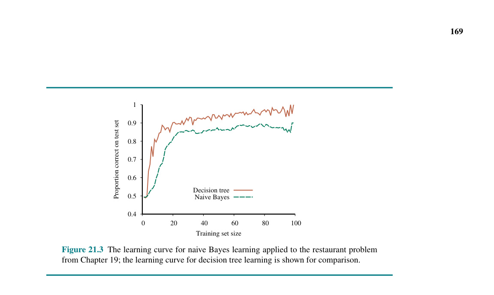
Chúng ta có thể phân biệt hai loại mô hình học máy được sử dụng cho bộ phân loại (classifiers): mô hình sinh (generative) và mô hình phân biệt (discriminative). Một mô hình sinh lập mô hình cho phân phối xác suất của từng lớp. Ví dụ, bộ phân loại văn bản Naive Bayes từ Mục 12.6.1 tạo ra một mô hình riêng biệt cho từng danh mục văn bản—một cho thể thao, một cho thời tiết, v.v. Mỗi mô hình bao gồm xác suất tiên nghiệm của danh mục—ví dụ: $P(Category=weather)$—cũng như xác suất có điều kiện $P(Inputs|Category=weather)$. Từ những xác suất này, chúng ta có thể tính toán xác suất đồng thời (joint probability) $P(Inputs, Category=weather)$ và chúng ta có thể sinh ra một lựa chọn ngẫu nhiên các từ mang tính đại diện cho các văn bản trong danh mục thời tiết.
Một mô hình phân biệt (discriminative model) trực tiếp học đường ranh giới quyết định (decision boundary) giữa các lớp. Tức là, nó học $P(Category|Inputs)$. Cho trước các đầu vào ví dụ, một mô hình phân biệt sẽ đưa ra một danh mục đầu ra, nhưng bạn không thể sử dụng một mô hình phân biệt để, chẳng hạn, sinh ra các từ ngẫu nhiên mang tính đại diện cho một danh mục. Hồi quy logistic (Logistic regression), cây quyết định (decision trees), và máy vectơ hỗ trợ (support vector machines) đều là các mô hình phân biệt.
Vì các mô hình phân biệt đặt toàn bộ sự tập trung vào việc xác định ranh giới quyết định—tức là, thực sự thực hiện nhiệm vụ phân loại mà chúng được yêu cầu làm—chúng có xu hướng hoạt động tốt hơn ở giới hạn (in the limit), với lượng dữ liệu huấn luyện tùy ý. Tuy nhiên, với dữ liệu hạn chế, trong một số trường hợp, một mô hình sinh lại hoạt động tốt hơn. Ng và Jordan (2002) so sánh bộ phân loại sinh Naive Bayes với bộ phân loại phân biệt hồi quy logistic trên 15 tập dữ liệu (nhỏ), và nhận thấy rằng với lượng dữ liệu tối đa, mô hình phân biệt hoạt động tốt hơn trên 9 trong số 15 tập dữ liệu, nhưng chỉ với một lượng dữ liệu nhỏ, mô hình sinh hoạt động tốt hơn trên 14 trong số 15 tập dữ liệu.
Các mô hình xác suất liên tục như mô hình tuyến tính-Gaussian (linear-Gaussian model) đã được trình bày ở trang 440. Vì các biến liên tục có mặt ở khắp mọi nơi trong các ứng dụng thế giới thực, nên điều quan trọng là phải biết cách học các tham số của các mô hình liên tục từ dữ liệu. Các nguyên tắc cho học hợp lý cực đại là hoàn toàn giống nhau trong cả hai trường hợp liên tục và rời rạc.
Hãy bắt đầu với một trường hợp rất đơn giản: học các tham số của một hàm mật độ Gaussian trên một biến duy nhất. Tức là, chúng ta giả định dữ liệu được tạo ra như sau:
$$P(x) = \frac{1}{\sqrt{2\pi}\sigma} e^{-\frac{(x - \mu)^2}{2\sigma^2}}$$
Các tham số của mô hình này là giá trị trung bình (mean) $\mu$ và độ lệch chuẩn (standard deviation) $\sigma$. (Lưu ý rằng "hằng số" chuẩn hóa phụ thuộc vào $\sigma$, do đó chúng ta không thể bỏ qua nó). Gọi các giá trị quan sát được là $x_1, \ldots, x_N$. Khi đó, log của khả năng (log likelihood) là:
$$L = \sum_{j=1}^N \log \frac{1}{\sqrt{2\pi}\sigma} e^{-\frac{(x_j - \mu)^2}{2\sigma^2}} = N(-\log\sqrt{2\pi} - \log\sigma) - \sum_{j=1}^N \frac{(x_j - \mu)^2}{2\sigma^2}$$
Đặt các đạo hàm bằng không như thường lệ, chúng ta thu được:
$$\frac{\partial L}{\partial \mu} = \frac{1}{\sigma^2} \sum_{j=1}^N (x_j - \mu) = 0 \implies \mu = \frac{\sum_j x_j}{N}$$
$$\frac{\partial L}{\partial \sigma} = -\frac{N}{\sigma} + \frac{1}{\sigma^3} \sum_{j=1}^N (x_j - \mu)^2 = 0 \implies \sigma = \sqrt{\frac{\sum_j (x_j - \mu)^2}{N}}$$ (21.4)
Tức là, giá trị hợp lý cực đại của trung bình chính là trung bình mẫu (sample average) và giá trị hợp lý cực đại của độ lệch chuẩn chính là căn bậc hai của phương sai mẫu (sample variance). Một lần nữa, đây là những kết quả đáng an tâm xác nhận thực tiễn của "ý thức thông thường".
Bây giờ hãy xem xét một mô hình tuyến tính-Gaussian với một biến cha liên tục $X$ và một biến con liên tục $Y$. Như đã giải thích ở trang 440, $Y$ có phân phối Gaussian có trung bình phụ thuộc tuyến tính vào giá trị của $X$ và có độ lệch chuẩn cố định. Để học phân phối có điều kiện $P(Y|X)$, chúng ta có thể cực đại hóa khả năng có điều kiện (conditional likelihood):
$$P(y|x) = \frac{1}{\sqrt{2\pi}\sigma} e^{-\frac{(y - (\theta_1 x + \theta_2))^2}{2\sigma^2}}$$ (21.5)
Ở đây, các tham số là $\theta_1, \theta_2$, và $\sigma$. Dữ liệu là một tập hợp các cặp $(x_j, y_j)$, như được minh họa trong
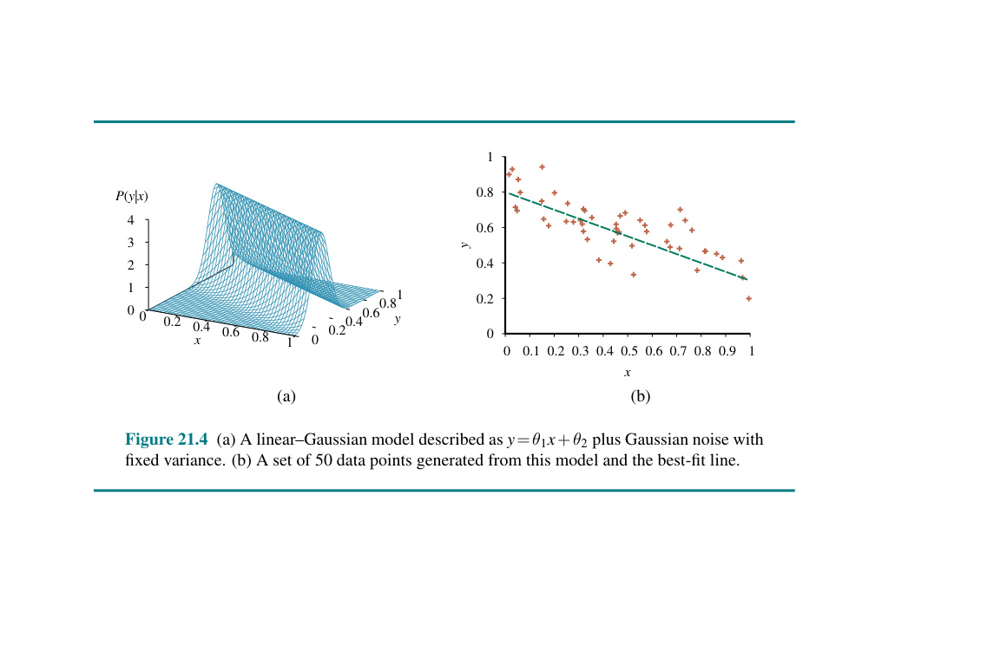
Đây chính là đại lượng được tối thiểu hóa bởi thủ tục hồi quy tuyến tính (linear regression) tiêu chuẩn được mô tả trong Mục 19.6. Bây giờ chúng ta có thể hiểu tại sao: việc tối thiểu hóa tổng các bình phương sai số sẽ mang lại mô hình đường thẳng hợp lý cực đại, với điều kiện là dữ liệu được tạo ra với nhiễu Gaussian có phương sai cố định $\sigma$.
Học hợp lý cực đại dẫn đến các thủ tục đơn giản, nhưng nó có những khiếm khuyết nghiêm trọng với các tập dữ liệu nhỏ. Ví dụ, sau khi nhìn thấy một viên kẹo anh đào, giả thuyết hợp lý cực đại là túi kẹo 100% anh đào (tức là, $\theta = 1.0$). Trừ khi phân phối tiên nghiệm của một người là các túi kẹo phải toàn là anh đào hoặc toàn là chanh, thì đây không phải là một kết luận hợp lý. Khả năng cao hơn là cái túi là sự pha trộn giữa chanh và anh đào. Cách tiếp cận Bayes đối với việc học tham số bắt đầu bằng một xác suất tiên nghiệm giả thuyết (hypothesis prior) và cập nhật phân phối khi có dữ liệu đến.
Ví dụ về kẹo trong Hình 21.2(a) có một tham số, $\theta$: xác suất một viên kẹo được chọn ngẫu nhiên có vị anh đào. Theo quan điểm Bayes, $\theta$ là giá trị (chưa biết) của một biến ngẫu nhiên $\Theta$ định nghĩa không gian giả thuyết; tiên nghiệm giả thuyết là phân phối tiên nghiệm trên $P(\Theta)$. Do đó, $P(\Theta = \theta)$ là xác suất tiên nghiệm rằng cái túi có $\theta$ phần kẹo anh đào.
Nếu tham số $\theta$ có thể là bất kỳ giá trị nào từ 0 đến 1, thì $P(\Theta)$ là một hàm mật độ xác suất liên tục (xem Mục A.3). Nếu chúng ta không biết gì về các giá trị có thể có của $\theta$, chúng ta có thể sử dụng hàm mật độ đều (uniform density function) $P(\theta) = Uniform(\theta; 0, 1)$, cho biết tất cả các giá trị đều có khả năng bằng nhau.
Một họ các hàm mật độ xác suất linh hoạt hơn được gọi là phân phối beta (beta distributions). Mỗi phân phối beta được xác định bởi hai siêu tham số (hyperparameters) $a$ và $b$ sao cho:
$$Beta(\theta; a, b) = \alpha \theta^{a-1} (1 - \theta)^{b-1}$$ (21.6)
cho $\theta$ trong khoảng $[0, 1]$. Hằng số chuẩn hóa $\alpha$, giúp cho phân phối tích phân bằng 1, phụ thuộc vào $a$ và $b$.
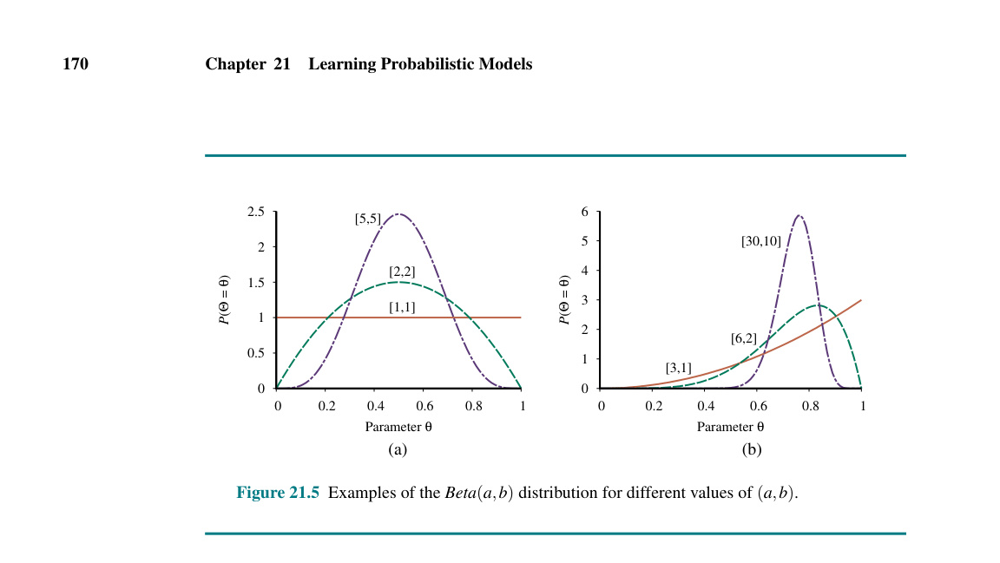
Bên cạnh sự linh hoạt của nó, họ phân phối beta còn có một thuộc tính tuyệt vời khác: nếu $\Theta$ có phân phối tiên nghiệm là $Beta(a, b)$, thì sau khi quan sát thấy một điểm dữ liệu, phân phối hậu nghiệm cho $\Theta$ cũng là một phân phối beta. Nói cách khác, phân phối Beta đóng (closed) dưới phép cập nhật. Họ beta được gọi là tiên nghiệm liên hợp (conjugate prior) cho họ phân phối của một biến Boolean. Hãy xem cách điều này hoạt động. Giả sử chúng ta quan sát thấy một viên kẹo anh đào; khi đó chúng ta có:
$$P(\theta | D_1=cherry) = \alpha P(D_1=cherry | \theta) P(\theta)$$ $$= \alpha \theta Beta(\theta; a, b) = \alpha \theta \alpha' \theta^{a-1} (1 - \theta)^{b-1}$$ $$= \alpha'' \theta^a (1 - \theta)^{b-1} = Beta(\theta; a+1, b)$$
Do đó, sau khi thấy một viên kẹo anh đào, chúng ta chỉ cần tăng tham số $a$ lên để lấy hậu nghiệm; tương tự, sau khi thấy kẹo chanh, chúng ta tăng tham số $b$. Do đó, chúng ta có thể coi các siêu tham số $a$ và $b$ như các số đếm ảo (virtual counts), theo nghĩa là một phân phối tiên nghiệm $Beta(a, b)$ hoạt động hoàn toàn giống như thể chúng ta đã bắt đầu với một tiên nghiệm đều $Beta(1, 1)$ và đã nhìn thấy $a-1$ viên kẹo anh đào thực sự và $b-1$ viên kẹo chanh thực sự.
Bằng cách kiểm tra một chuỗi các phân phối beta với các giá trị $a$ và $b$ tăng dần, nhưng vẫn giữ nguyên tỷ lệ, chúng ta có thể thấy một cách sống động cách phân phối hậu nghiệm trên tham số $\Theta$ thay đổi khi dữ liệu đến. Ví dụ, giả sử túi kẹo thực tế có 75% anh đào. Hình 21.5(b) cho thấy chuỗi $Beta(3, 1), Beta(6, 2), Beta(30, 10)$. Rõ ràng, phân phối đang hội tụ thành một đỉnh hẹp quanh giá trị thực của $\Theta$. Do đó, đối với các tập dữ liệu lớn, học Bayes (ít nhất là trong trường hợp này) hội tụ về cùng một câu trả lời như học hợp lý cực đại.
Bây giờ chúng ta hãy xem xét một trường hợp phức tạp hơn. Mạng trong Hình 21.2(b) có ba tham số, $\theta$, $\theta_1$, và $\theta_2$, trong đó $\theta_1$ là xác suất có giấy gói màu đỏ trên một viên kẹo anh đào và ...
$\theta_2$ là xác suất một viên kẹo chanh có vỏ bọc màu đỏ. Tiên nghiệm giả thuyết Bayes phải bao phủ cả ba tham số—tức là, chúng ta cần xác định $P(\Theta, \Theta_1, \Theta_2)$. Thông thường, chúng ta giả định sự độc lập của tham số (parameter independence):
$$P(\Theta, \Theta_1, \Theta_2) = P(\Theta)P(\Theta_1)P(\Theta_2)$$
Với giả định này, mỗi tham số có thể có phân phối beta riêng của nó được cập nhật riêng biệt khi dữ liệu đến.
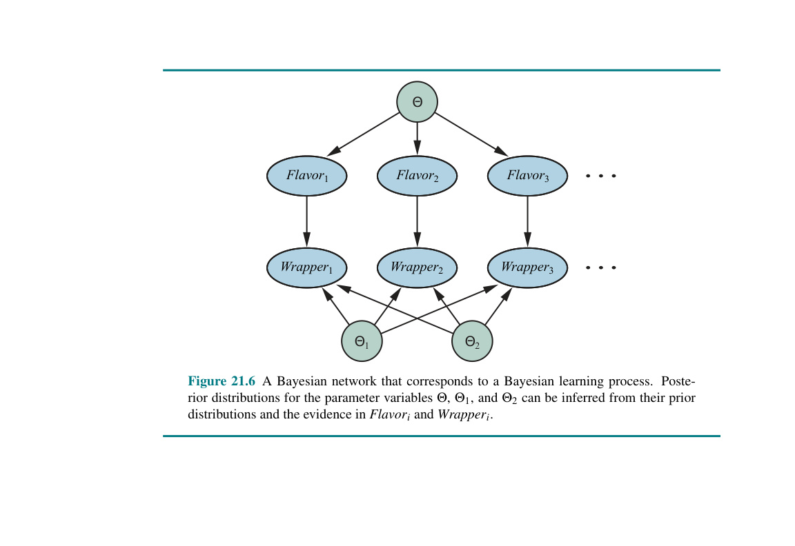
Các nút $\Theta, \Theta_1, \Theta_2$ không có các nút cha. Đối với quan sát thứ $i$ về một vỏ bọc và hương vị tương ứng của một viên kẹo, chúng ta thêm các nút $Wrapper_i$ và $Flavor_i$. $Flavor_i$ phụ thuộc vào tham số hương vị $\Theta$:
$$P(Flavor_i=cherry | \Theta=\theta) = \theta$$
$Wrapper_i$ phụ thuộc vào $\Theta_1$ và $\Theta_2$:
$$P(Wrapper_i=red | Flavor_i=cherry, \Theta_1=\theta_1) = \theta_1$$ $$P(Wrapper_i=red | Flavor_i=lime, \Theta_2=\theta_2) = \theta_2$$
Bây giờ, toàn bộ quá trình học Bayes cho mạng Bayes gốc trong Hình 21.2(b) có thể được xây dựng như một bài toán suy diễn trong mạng Bayes dẫn xuất được hiển thị trong Hình 21.6, nơi dữ liệu và các tham số trở thành các nút. Khi chúng ta đã thêm tất cả các nút bằng chứng mới, sau đó chúng ta có thể truy vấn các biến tham số (trong trường hợp này là $\Theta, \Theta_1, \Theta_2$). Dưới công thức này, chỉ có một thuật toán học duy nhất—thuật toán suy diễn cho các mạng Bayes.
Tất nhiên, bản chất của các mạng này hơi khác so với các mạng trong Chương 13 vì có số lượng biến bằng chứng khổng lồ tiềm ẩn đại diện cho tập huấn luyện và sự phổ biến của các biến tham số có giá trị liên tục. Suy diễn chính xác có thể là không thể (impossible) ngoại trừ trong các trường hợp rất đơn giản như mô hình Naive Bayes. Những người làm thực tiễn thường sử dụng các phương pháp suy diễn xấp xỉ như MCMC (Mục 13.4.2); nhiều gói phần mềm thống kê tích hợp các hiện thực hiệu quả của MCMC cho mục đích này.
Ở đây chúng ta sẽ minh họa cách áp dụng cách tiếp cận Bayes vào một bài toán thống kê tiêu chuẩn: hồi quy tuyến tính. Cách tiếp cận thông thường được mô tả trong Mục 19.6 như là việc tối thiểu hóa tổng bình phương sai số và được giải thích lại trong Mục 21.2.4 như là cực đại hóa khả năng giả định mô hình nhiễu Gaussian. Những phương pháp này tạo ra một giả thuyết tốt nhất duy nhất: một đường thẳng với các giá trị cụ thể cho độ dốc (slope) và giao điểm (intercept) và một phương sai cố định cho sai số dự đoán tại bất kỳ điểm nào. Không có thước đo nào về mức độ tin cậy của một người đối với các giá trị độ dốc và giao điểm này.
Hơn nữa, nếu một người đang dự đoán giá trị cho một điểm dữ liệu chưa từng thấy ở xa các điểm dữ liệu đã quan sát, thì có vẻ vô lý khi giả định một sai số dự đoán tương tự như sai số dự đoán cho một điểm dữ liệu nằm ngay cạnh một điểm dữ liệu đã quan sát. Sẽ hợp lý hơn nếu sai số dự đoán lớn hơn khi điểm dữ liệu càng cách xa dữ liệu đã quan sát, vì một thay đổi nhỏ ở độ dốc sẽ gây ra thay đổi lớn ở giá trị dự đoán cho một điểm ở xa.
Phương pháp tiếp cận Bayes giải quyết cả hai vấn đề này. Ý tưởng chung, như trong phần trước, là đặt một phân phối tiên nghiệm lên các tham số mô hình—ở đây là các hệ số của mô hình tuyến tính và phương sai nhiễu—và sau đó tính toán phân phối hậu nghiệm của tham số cho trước dữ liệu. Đối với dữ liệu đa biến (multivariate data) và mô hình nhiễu chưa biết, điều này dẫn đến khá nhiều đại số tuyến tính, vì vậy chúng ta tập trung vào một trường hợp đơn giản: dữ liệu đơn biến (univariable data), một mô hình bị ràng buộc đi qua gốc tọa độ, và nhiễu đã biết: một phân phối chuẩn với phương sai $\sigma^2$. Khi đó chúng ta chỉ có một tham số $\theta$ và mô hình là:
$$P(y|x, \theta) = N(y; \theta x, \sigma^2) = \frac{1}{\sqrt{2\pi}\sigma} e^{-\frac{(y - \theta x)^2}{2\sigma^2}}$$ (21.7)
Vì log của khả năng là một hàm bậc hai (quadratic) đối với $\theta$, dạng thích hợp cho một tiên nghiệm liên hợp trên $\theta$ cũng là một hàm Gaussian. Điều này đảm bảo rằng hậu nghiệm cho $\theta$ cũng sẽ là Gaussian. Chúng ta sẽ giả định một trung bình $\mu_0$ và phương sai $\sigma_0^2$ cho tiên nghiệm, sao cho:
$$P(\theta) = N(\theta; \mu_0, \sigma_0^2) = \frac{1}{\sqrt{2\pi}\sigma_0} e^{-\frac{(\theta - \mu_0)^2}{2\sigma_0^2}}$$ (21.8)
Tùy thuộc vào dữ liệu đang được mô hình hóa, người ta có thể có một số ý tưởng về loại độ dốc $\theta$ nào đáng được kỳ vọng, hoặc người ta có thể hoàn toàn theo thuyết bất khả tri (agnostic). Trong trường hợp sau, thật hợp lý khi chọn $\mu_0$ bằng 0 và $\sigma_0^2$ lớn—được gọi là một tiên nghiệm không cung cấp thông tin (uninformative prior). Cuối cùng, chúng ta có thể giả định một tiên nghiệm $P(x)$ cho giá trị $x$ của mỗi điểm dữ liệu, nhưng điều này hoàn toàn không quan trọng đối với việc phân tích vì nó không phụ thuộc vào $\theta$.
Bây giờ việc thiết lập đã hoàn tất, vì vậy chúng ta có thể tính toán hậu nghiệm cho $\theta$ bằng Phương trình (21.1): $P(\theta|\mathbf{d}) \propto P(\mathbf{d}|\theta)P(\theta)$. Các điểm dữ liệu quan sát được là $\mathbf{d} = (x_1, y_1), \ldots, (x_N, y_N)$, do đó khả năng (likelihood) của dữ liệu thu được từ Phương trình (21.7) như sau:
$$P(\mathbf{d}|\theta) = \left(\prod_i P(x_i)\right) \left(\prod_i P(y_i|x_i, \theta)\right) = \alpha \prod_i e^{-\frac{(y_i - \theta x_i)^2}{2\sigma^2}} = \alpha e^{-\frac{1}{2}\sum_i \frac{(y_i - \theta x_i)^2}{\sigma^2}}$$
trong đó chúng ta đã hấp thụ các tiên nghiệm giá trị $x$ và các hằng số chuẩn hóa của $N$ hàm Gaussian vào một hằng số $\alpha$ độc lập với $\theta$. Bây giờ chúng ta kết hợp điều này và tiên nghiệm tham số từ Phương trình (21.8) để thu được hậu nghiệm:
$$P(\theta|\mathbf{d}) = \alpha' e^{-\frac{1}{2}\frac{(\theta - \mu_0)^2}{\sigma_0^2}} e^{-\frac{1}{2}\sum_i \frac{(y_i - \theta x_i)^2}{\sigma^2}}$$
Mặc dù điều này trông có vẻ phức tạp, mỗi số mũ là một hàm bậc hai của $\theta$, do đó tổng của hai số mũ cũng vậy. Do đó, toàn bộ biểu thức đại diện cho một phân phối Gaussian đối với $\theta$. Sử dụng các thao tác đại số rất giống với các thao tác trong Mục 14.4, chúng ta tìm thấy:
$$P(\theta|\mathbf{d}) = \alpha'' e^{-\frac{1}{2}\frac{(\theta - \mu_N)^2}{\sigma_N^2}}$$
với trung bình và phương sai "được cập nhật" cho bởi:
$$\mu_N = \frac{\sigma^2 \mu_0 + \sigma_0^2 \sum_i x_i y_i}{\sigma^2 + \sigma_0^2 \sum_i x_i^2} \quad \text{và} \quad \sigma_N^2 = \frac{\sigma^2 \sigma_0^2}{\sigma^2 + \sigma_0^2 \sum_i x_i^2}$$
Hãy xem các công thức này để biết ý nghĩa của chúng. Khi dữ liệu tập trung hẹp vào một vùng nhỏ của trục $x$ gần gốc tọa độ, $\sum_i x_i^2$ sẽ nhỏ và phương sai hậu nghiệm $\sigma_N^2$ sẽ lớn, gần bằng với phương sai tiên nghiệm $\sigma_0^2$. Điều này đúng như người ta mong đợi: dữ liệu làm rất ít để hạn chế sự xoay của đường thẳng quanh gốc tọa độ. Ngược lại, khi dữ liệu được trải rộng dọc theo trục, $\sum_i x_i^2$ sẽ lớn và phương sai hậu nghiệm $\sigma_N^2$ sẽ nhỏ, gần bằng với $\sigma^2 / (\sum_i x_i^2)$, do đó độ dốc sẽ bị ràng buộc rất chặt chẽ.
Để đưa ra dự đoán tại một điểm dữ liệu cụ thể, chúng ta phải tích phân qua các giá trị có thể có của $\theta$, như được gợi ý bởi Phương trình (21.2):
$$P(y|x, \mathbf{d}) = \int_{-\infty}^{\infty} P(y|x, \mathbf{d}, \theta) P(\theta|x, \mathbf{d}) d\theta = \int_{-\infty}^{\infty} P(y|x, \theta) P(\theta|\mathbf{d}) d\theta$$ $$= \int_{-\infty}^{\infty} \alpha' e^{-\frac{1}{2}\frac{(y - \theta x)^2}{\sigma^2}} \alpha'' e^{-\frac{1}{2}\frac{(\theta - \mu_N)^2}{\sigma_N^2}} d\theta$$
Một lần nữa, tổng của hai số mũ là một hàm bậc hai của $\theta$, vì vậy chúng ta có một phân phối Gaussian trên $\theta$ mà tích phân của nó bằng 1. Các số hạng còn lại theo $y$ tạo thành một phân phối Gaussian khác:
$$P(y|x, \mathbf{d}) \propto e^{-\frac{1}{2}\frac{(y - \mu_N x)^2}{\sigma^2 + \sigma_N^2 x^2}}$$
Nhìn vào biểu thức này, chúng ta thấy rằng dự đoán trung bình cho $y$ là $\mu_N x$, tức là nó dựa trên trung bình hậu nghiệm của $\theta$. Phương sai của dự đoán được cho bởi nhiễu mô hình $\sigma^2$ cộng với một số hạng tỷ lệ với $x^2$, điều này có nghĩa là độ lệch chuẩn của dự đoán tăng tiệm cận tuyến tính với khoảng cách từ gốc tọa độ.
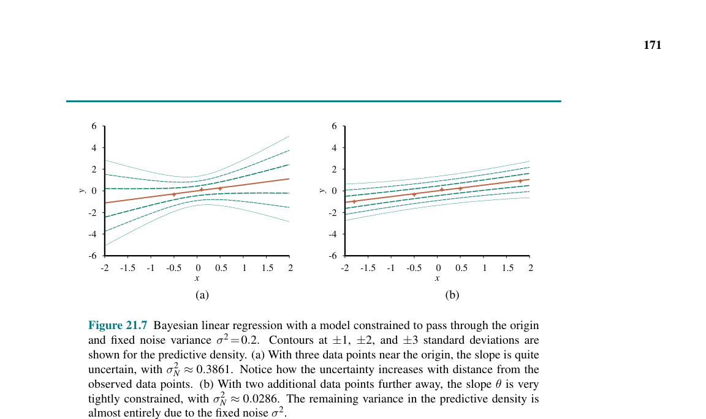
Cho đến nay, chúng ta đã giả định rằng cấu trúc của mạng Bayes được cho trước và chúng ta chỉ cố gắng học các tham số. Cấu trúc của mạng đại diện cho kiến thức nhân quả cơ bản về miền ứng dụng mà một chuyên gia, hoặc thậm chí một người dùng ngây thơ, thường dễ dàng cung cấp. Tuy nhiên, trong một số trường hợp, mô hình nhân quả có thể không có sẵn hoặc là chủ đề tranh cãi—ví dụ, một số tập đoàn đã tuyên bố từ lâu rằng hút thuốc không gây ung thư và các tập đoàn khác khẳng định rằng nồng độ $CO_2$ không ảnh hưởng đến khí hậu—vì vậy điều quan trọng là phải hiểu cách cấu trúc của một mạng Bayes có thể được học từ dữ liệu. Mục này phác thảo ngắn gọn những ý tưởng chính.
Cách tiếp cận hiển nhiên nhất là tìm kiếm (search) một mô hình tốt. Chúng ta có thể bắt đầu với một mô hình không chứa liên kết (links) nào và bắt đầu thêm các nút cha cho mỗi nút, khớp các tham số bằng các phương pháp mà chúng ta vừa đề cập và đo lường độ chính xác của mô hình thu được. Thay vào đó, chúng ta có thể bắt đầu với một phỏng đoán ban đầu về cấu trúc và sử dụng tìm kiếm leo đồi (hill climbing) hoặc luyện kim giả lập (simulated annealing) để thực hiện các sửa đổi, tinh chỉnh lại các tham số sau mỗi lần thay đổi cấu trúc. Các sửa đổi có thể bao gồm đảo ngược, thêm hoặc xóa các liên kết. Chúng ta không được tạo ra các chu trình trong quá trình này, do đó nhiều thuật toán giả định rằng một thứ tự đã được đưa ra cho các biến, và một nút chỉ có thể có các nút cha nằm trong số các nút xuất hiện trước đó trong thứ tự (giống hệt như quá trình xây dựng trong Chương 13). Để đạt được tính tổng quát đầy đủ, chúng ta cũng cần tìm kiếm trên các thứ tự có thể có.
Có hai phương pháp thay thế để quyết định khi nào một cấu trúc tốt đã được tìm thấy. Phương pháp đầu tiên là kiểm tra xem các khẳng định độc lập có điều kiện ẩn chứa trong cấu trúc có thực sự được thỏa mãn trong dữ liệu hay không. Ví dụ, việc sử dụng mô hình Naive Bayes cho bài toán nhà hàng giả định rằng:
$$P(Hungry, Bar | WillWait) = P(Hungry | WillWait) P(Bar | WillWait)$$
và chúng ta có thể kiểm tra trong dữ liệu xem phương trình tương tự có đúng giữa các tần suất có điều kiện tương ứng hay không. Nhưng ngay cả khi cấu trúc mô tả bản chất nhân quả thực sự của miền ứng dụng, những dao động thống kê trong tập dữ liệu có nghĩa là phương trình sẽ không bao giờ được thỏa mãn một cách chính xác, do đó chúng ta cần thực hiện một phép kiểm định thống kê phù hợp để xem liệu có đủ bằng chứng cho thấy giả thuyết độc lập bị vi phạm hay không. Sự phức tạp của mạng kết quả sẽ phụ thuộc vào ngưỡng được sử dụng cho phép kiểm định này—phép kiểm định độc lập càng nghiêm ngặt, số lượng liên kết được thêm vào càng nhiều và nguy cơ khớp quá mức càng cao.
Một phương pháp phù hợp hơn với các ý tưởng trong chương này là đánh giá mức độ mà mô hình được đề xuất giải thích dữ liệu (theo nghĩa xác suất). Tuy nhiên, chúng ta phải cẩn thận với cách chúng ta đo lường điều này. Nếu chúng ta chỉ cố gắng tìm giả thuyết hợp lý cực đại, chúng ta sẽ kết thúc với một mạng kết nối đầy đủ (fully connected network), bởi vì việc thêm nhiều nút cha hơn vào một nút không bao giờ có thể làm giảm khả năng (likelihood) (Bài tập 21.MLPA). Chúng ta buộc phải phạt (penalize) độ phức tạp của mô hình theo một cách nào đó. Phương pháp MAP (hoặc MDL) chỉ đơn giản trừ đi một hình phạt khỏi khả năng của mỗi cấu trúc (sau khi tinh chỉnh tham số) trước khi so sánh các cấu trúc khác nhau. Phương pháp Bayes đặt một phân phối tiên nghiệm đồng thời trên các cấu trúc và các tham số. Thông thường có quá nhiều cấu trúc để có thể tính tổng (phát triển siêu mũ - superexponential - theo số lượng biến), vì vậy hầu hết các nhà thực hành sử dụng MCMC để lấy mẫu trên các cấu trúc.
Việc phạt sự phức tạp (dù bằng phương pháp MAP hay Bayes) đưa ra một mối liên hệ quan trọng giữa cấu trúc tối ưu và bản chất của việc biểu diễn các phân phối có điều kiện trong mạng. Với các phân phối dạng bảng (tabular distributions), hình phạt phức tạp đối với phân phối của một nút tăng theo cấp số nhân với số lượng nút cha, nhưng với, chẳng hạn, các phân phối noisy-OR, nó chỉ tăng tuyến tính. Điều này có nghĩa là việc học với các mô hình noisy-OR (hoặc các mô hình được tham số hóa nhỏ gọn khác) có xu hướng tạo ra các cấu trúc học được với nhiều nút cha hơn so với việc học với các phân phối dạng bảng.
Hoàn toàn có thể học một mô hình xác suất mà không cần đưa ra bất kỳ giả định nào về cấu trúc và cách tham số hóa của nó bằng cách áp dụng các phương pháp phi tham số (nonparametric) của Mục 19.7. Nhiệm vụ ước lượng mật độ phi tham số (nonparametric density estimation) thường được thực hiện trong các miền liên tục, chẳng hạn như miền được hiển thị trong
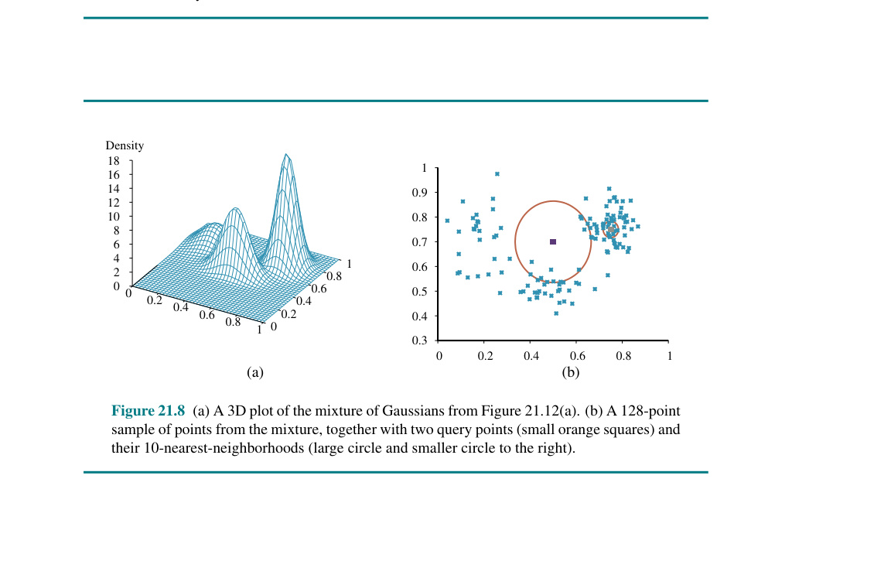
Đầu tiên chúng ta sẽ xem xét các mô hình k láng giềng gần nhất (k-nearest-neighbors). (Trong Chương 19, chúng ta đã thấy các mô hình láng giềng gần nhất cho bài toán phân loại và hồi quy; ở đây chúng ta thấy chúng cho ước lượng mật độ). Cho trước một mẫu các điểm dữ liệu, để ước lượng mật độ xác suất chưa biết tại một điểm truy vấn $x$, chúng ta có thể chỉ cần đo mật độ của các điểm dữ liệu trong vùng lân cận của $x$. Hình 21.8(b) cho thấy hai điểm truy vấn (các hình vuông nhỏ). Đối với mỗi điểm truy vấn, chúng ta đã vẽ một vòng tròn nhỏ nhất bao quanh 10 láng giềng—tức là 10-láng-giềng-gần-nhất. Chúng ta có thể thấy rằng vòng tròn ở giữa lớn, có nghĩa là mật độ ở đó thấp, và vòng tròn ở bên phải nhỏ, có nghĩa là mật độ ở đó cao. Trong
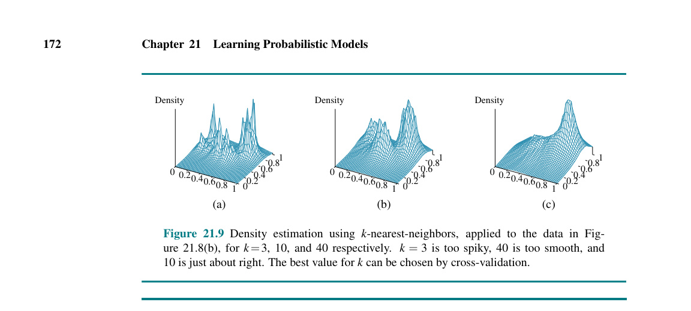
Một khả năng khác là sử dụng các hàm hạt nhân (kernel functions), như chúng ta đã làm cho hồi quy có trọng số cục bộ. Để áp dụng một mô hình hạt nhân vào ước lượng mật độ, giả sử rằng mỗi điểm dữ liệu sinh ra một hàm mật độ nhỏ của riêng nó. Ví dụ: chúng ta có thể sử dụng các hàm Gaussian hình cầu (spherical Gaussians) với độ lệch chuẩn $w$ dọc theo mỗi trục. Khi đó mật độ ước lượng tại một điểm truy vấn $x$ là trung bình của các hạt nhân dữ liệu:
$$P(x) = \frac{1}{N} \sum_{j=1}^N K(x, x_j) \quad \text{trong đó} \quad K(x, x_j) = \frac{1}{(w \sqrt{2\pi})^d} e^{-\frac{D(x, x_j)^2}{2w^2}}$$
trong đó $d$ là số chiều trong $x$ và $D$ là hàm khoảng cách Euclid. Chúng ta vẫn gặp vấn đề trong việc chọn một giá trị phù hợp cho chiều rộng hạt nhân $w$;
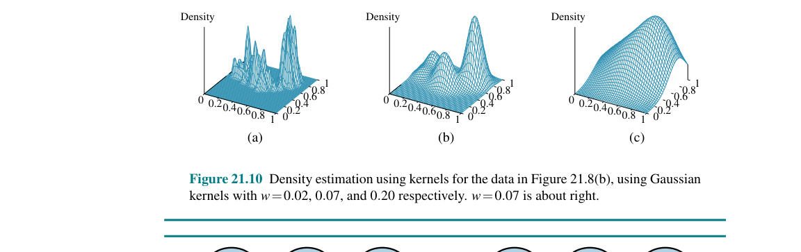
Mục trước đã đề cập đến trường hợp có thể quan sát đầy đủ (fully observable case). Rất nhiều bài toán thế giới thực có các biến ẩn (hidden variables) (đôi khi được gọi là biến tiềm ẩn - latent variables), là những biến không thể quan sát được trong dữ liệu. Ví dụ, hồ sơ bệnh án thường bao gồm các triệu chứng quan sát được, chẩn đoán của bác sĩ, phương pháp điều trị được áp dụng, và có lẽ là kết quả của phương pháp điều trị, nhưng chúng hiếm khi chứa một quan sát trực tiếp về bản thân căn bệnh đó! (Lưu ý rằng chẩn đoán không phải là căn bệnh; nó là một hậu quả nhân quả của các triệu chứng quan sát được, mà các triệu chứng đó lại do căn bệnh gây ra).
Người ta có thể hỏi, "Nếu căn bệnh không được quan sát, liệu chúng ta có thể xây dựng một mô hình chỉ dựa trên các biến quan sát được không?" Câu trả lời xuất hiện trong
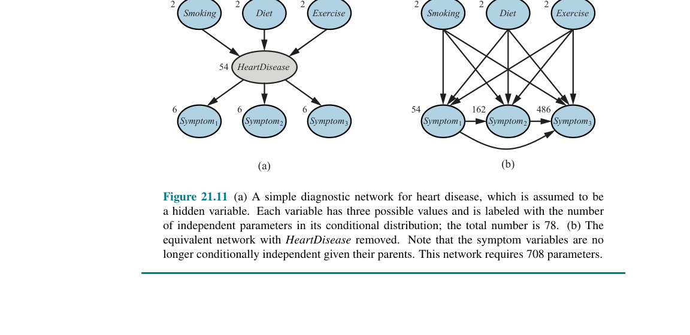
Các biến ẩn rất quan trọng, nhưng chúng thực sự làm phức tạp bài toán học. Ví dụ, trong Hình 21.11(a), không rõ làm thế nào để học phân phối có điều kiện cho bệnh tim ($HeartDisease$), cho trước các nút cha của nó, bởi vì chúng ta không biết giá trị của $HeartDisease$ trong mỗi trường hợp; vấn đề tương tự nảy sinh trong việc học các phân phối cho các triệu chứng. Mục này mô tả một thuật toán có tên là kỳ vọng - cực đại hóa (expectation-maximization), hay EM, giải quyết vấn đề này theo một cách rất tổng quát. Chúng ta sẽ đưa ra ba ví dụ và sau đó cung cấp một mô tả tổng quát. Thuật toán thoạt đầu có vẻ giống như phép thuật, nhưng một khi trực giác đã được phát triển, người ta có thể tìm thấy các ứng dụng cho EM trong một loạt các bài toán học máy khổng lồ.
Gom cụm không giám sát (Unsupervised clustering) là bài toán nhận biết nhiều danh mục trong một tập hợp các đối tượng. Bài toán này là không giám sát vì các nhãn danh mục (category labels) không được cung cấp. Ví dụ, giả sử chúng ta ghi lại quang phổ của một trăm ngàn ngôi sao; có những loại sao khác nhau nào được tiết lộ bởi quang phổ, và, nếu có, thì có bao nhiêu loại và đặc điểm của chúng là gì? Tất cả chúng ta đều quen thuộc với các thuật ngữ như "sao khổng lồ đỏ" (red giant) và "sao lùn trắng" (white dwarf), nhưng các ngôi sao không đội những chiếc mũ có ghi các nhãn này—các nhà thiên văn học đã phải thực hiện việc gom cụm không giám sát để xác định các danh mục này. Các ví dụ khác bao gồm việc xác định các loài, chi, bộ, ngành, v.v. trong hệ thống phân loại Linnaean và việc tạo ra các loại tự nhiên cho các đối tượng thông thường (xem Chương 10).
Việc gom cụm không giám sát bắt đầu với dữ liệu.
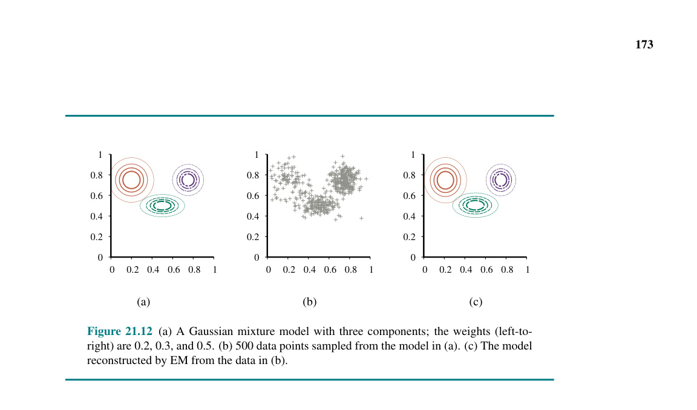
Tiếp theo, chúng ta cần hiểu loại phân phối xác suất nào có thể đã tạo ra dữ liệu. Việc gom cụm giả định rằng dữ liệu được tạo ra từ một phân phối hỗn hợp (mixture distribution), $P$. Một phân phối như vậy có $k$ thành phần (components), mỗi thành phần tự nó là một phân phối. Một điểm dữ liệu được tạo ra bằng cách trước tiên chọn một thành phần và sau đó tạo ra một mẫu từ thành phần đó. Gọi biến ngẫu nhiên $C$ biểu thị cho thành phần, với các giá trị $1, \ldots, k$; khi đó phân phối hỗn hợp được cho bởi:
$$P(\mathbf{x}) = \sum_{i=1}^k P(C=i)P(\mathbf{x}|C=i)$$
trong đó $\mathbf{x}$ đề cập đến các giá trị của các thuộc tính cho một điểm dữ liệu. Đối với dữ liệu liên tục, một lựa chọn tự nhiên cho các phân phối thành phần là phân phối Gaussian đa biến (multivariate Gaussian), tạo ra họ phân phối được gọi là hỗn hợp của các Gaussian (mixture of Gaussians). Các tham số của một hỗn hợp Gaussian là $w_i = P(C=i)$ (trọng số của mỗi thành phần), $\boldsymbol{\mu}_i$ (trung bình của mỗi thành phần), và $\boldsymbol{\Sigma}_i$ (ma trận hiệp phương sai của mỗi thành phần). Hình 21.12(a) cho thấy một hỗn hợp gồm ba Gaussian; trên thực tế, hỗn hợp này là nguồn dữ liệu trong phần (b) cũng như là mô hình được hiển thị trong Hình 21.8(a) ở trang 787.
Do đó, bài toán gom cụm không giám sát là phải khôi phục lại một mô hình hỗn hợp Gaussian giống như mô hình trong Hình 21.12(a) từ dữ liệu thô như trong Hình 21.12(b). Rõ ràng, nếu chúng ta biết thành phần nào đã tạo ra mỗi điểm dữ liệu, thì việc khôi phục các thành phần Gaussian sẽ rất dễ dàng: chúng ta có thể chỉ cần chọn tất cả các điểm dữ liệu từ một thành phần nhất định và sau đó áp dụng (một phiên bản đa biến của) Phương trình (21.4) (trang 780) để khớp các tham số của một Gaussian với một tập dữ liệu. Mặt khác, nếu chúng ta biết các tham số của từng thành phần, thì chúng ta có thể, ít nhất là theo nghĩa xác suất, gán mỗi điểm dữ liệu vào một thành phần.
Vấn đề là chúng ta không biết cả các phép gán lẫn các tham số. Ý tưởng cơ bản của thuật toán EM trong ngữ cảnh này là giả vờ rằng chúng ta biết các tham số của mô hình và sau đó suy diễn xác suất để mỗi điểm dữ liệu thuộc về từng thành phần. Sau đó, chúng ta khớp lại các thành phần với dữ liệu, trong đó mỗi thành phần được khớp với toàn bộ tập dữ liệu với mỗi điểm được tính trọng số bởi xác suất mà nó thuộc về thành phần đó. Quá trình lặp lại cho đến khi hội tụ. Về cơ bản, chúng ta đang "hoàn thiện" dữ liệu bằng cách suy diễn các phân phối xác suất trên các biến ẩn—mỗi điểm dữ liệu thuộc về thành phần nào—dựa trên mô hình hiện tại. Đối với hỗn hợp Gaussian, chúng ta khởi tạo các tham số của mô hình hỗn hợp một cách tùy ý và sau đó lặp lại hai bước sau:
Bước E (E-step): Tính các xác suất $p_{ij} = P(C=i|\mathbf{x}_j)$, là xác suất mà dữ liệu $\mathbf{x}_j$ được tạo ra bởi thành phần $i$. Theo định lý Bayes, chúng ta có $p_{ij} = \alpha P(\mathbf{x}_j|C=i)P(C=i)$. Số hạng $P(\mathbf{x}_j|C=i)$ chỉ là xác suất tại $\mathbf{x}_j$ của Gaussian thứ $i$, và số hạng $P(C=i)$ chỉ là tham số trọng số cho Gaussian thứ $i$. Định nghĩa $n_i = \sum_j p_{ij}$, là số điểm dữ liệu hiệu dụng hiện được gán cho thành phần $i$.
Bước M (M-step): Tính trung bình, hiệp phương sai và trọng số thành phần mới bằng cách sử dụng tuần tự các bước sau:
$$\boldsymbol{\mu}_i \leftarrow \sum_j p_{ij} \mathbf{x}_j / n_i$$ $$\boldsymbol{\Sigma}_i \leftarrow \sum_j p_{ij} (\mathbf{x}_j - \boldsymbol{\mu}_i)(\mathbf{x}_j - \boldsymbol{\mu}_i)^T / n_i$$ $$w_i \leftarrow n_i / N$$
trong đó $N$ là tổng số điểm dữ liệu. Bước E, hay bước kỳ vọng (expectation step), có thể được coi là việc tính toán các giá trị kỳ vọng $p_{ij}$ của các biến chỉ thị (indicator variables) ẩn $Z_{ij}$, trong đó $Z_{ij}$ là 1 nếu dữ liệu $\mathbf{x}_j$ được tạo ra bởi thành phần thứ $i$ và là 0 nếu ngược lại. Bước M, hay bước cực đại hóa (maximization step), tìm các giá trị mới của các tham số làm cực đại hóa log khả năng (log likelihood) của dữ liệu, cho trước các giá trị kỳ vọng của các biến chỉ thị ẩn.
Mô hình cuối cùng mà EM học được khi nó được áp dụng vào dữ liệu trong Hình 21.12(a) được hiển thị trong Hình 21.12(c); thực tế thì không thể phân biệt được nó với mô hình gốc đã tạo ra dữ liệu (đường ngang).
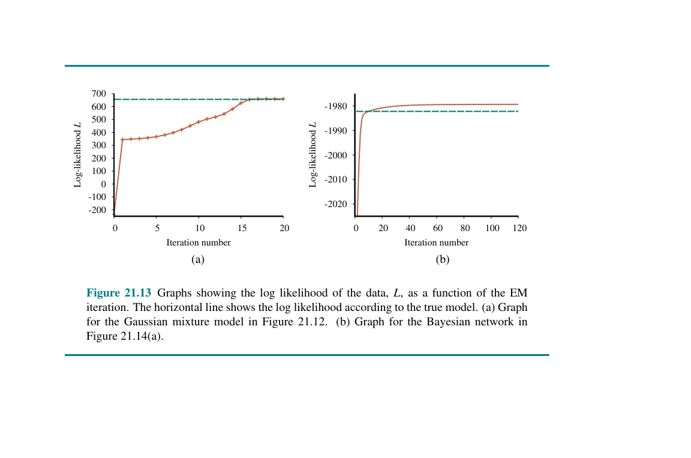
Có hai điểm cần chú ý. Đầu tiên, log khả năng cho mô hình cuối cùng học được vượt quá một chút so với mô hình gốc, từ đó dữ liệu được tạo ra. Điều này có vẻ đáng ngạc nhiên, nhưng nó chỉ đơn giản phản ánh thực tế là dữ liệu được tạo ra một cách ngẫu nhiên và có thể không cung cấp sự phản ánh chính xác mô hình cơ bản. Điểm thứ hai là EM làm tăng log khả năng của dữ liệu ở mọi lần lặp. Thực tế này có thể được chứng minh một cách tổng quát. Hơn nữa, trong một số điều kiện nhất định (đúng trong hầu hết các trường hợp), EM có thể được chứng minh là đạt đến cực đại cục bộ về khả năng (likelihood). (Trong một số trường hợp hiếm hoi, nó có thể chạm tới một điểm yên ngựa - saddle point - hoặc thậm chí là cực tiểu cục bộ). Theo nghĩa này, EM giống với thuật toán leo đồi dựa trên gradient, nhưng lưu ý rằng nó không có tham số "kích thước bước" (step size).
Mọi thứ không phải lúc nào cũng diễn ra tốt đẹp như Hình 21.13(a) gợi ý. Chẳng hạn, có thể xảy ra trường hợp một thành phần Gaussian co lại đến mức nó chỉ bao phủ một điểm dữ liệu duy nhất. Khi đó phương sai của nó sẽ về 0 và khả năng (likelihood) của nó sẽ tiến tới vô cùng! Nếu chúng ta không biết có bao nhiêu thành phần trong hỗn hợp, chúng ta phải thử các giá trị khác nhau của $k$ và xem giá trị nào là tốt nhất; đó có thể là một nguồn gây ra sai số. Một vấn đề khác là hai thành phần có thể "hợp nhất", thu được các trung bình và phương sai giống hệt nhau và chia sẻ các điểm dữ liệu của chúng. Các loại cực đại cục bộ thoái hóa (degenerate local maxima) này là những vấn đề nghiêm trọng, đặc biệt là trong các chiều không gian cao. Một giải pháp là đặt các phân phối tiên nghiệm lên các tham số mô hình và áp dụng phiên bản MAP của thuật toán EM. Một giải pháp khác là khởi động lại một thành phần với các tham số ngẫu nhiên mới nếu nó trở nên quá nhỏ hoặc quá gần với một thành phần khác. Việc khởi tạo hợp lý cũng giúp ích.
Để học một mạng Bayes với các biến ẩn, chúng ta áp dụng cùng những hiểu biết chuyên sâu đã hoạt động cho hỗn hợp các Gaussian.
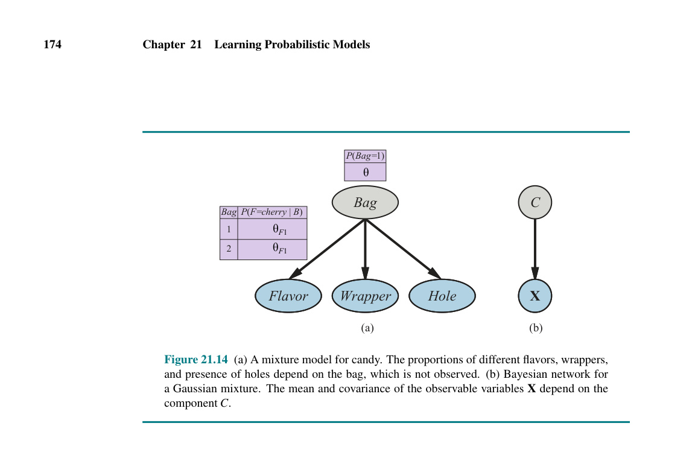
Mô hình tổng thể là một mô hình hỗn hợp: một tổng có trọng số của hai phân phối khác nhau, mỗi phân phối là tích của các phân phối đơn biến, độc lập. (Trên thực tế, chúng ta cũng có thể mô hình hóa hỗn hợp các Gaussian như một mạng Bayes, như được hiển thị trong Hình 21.14(b)). Trong hình, túi kẹo là một biến ẩn vì một khi kẹo đã được trộn lẫn với nhau, chúng ta không còn biết mỗi viên kẹo đến từ túi nào. Trong trường hợp như vậy, liệu chúng ta có thể khôi phục lại các mô tả của hai chiếc túi bằng cách quan sát những viên kẹo từ hỗn hợp không? Chúng ta hãy thực hiện một bước lặp EM cho bài toán này. Đầu tiên, hãy xem xét dữ liệu. Chúng ta đã tạo ra 1000 mẫu từ một mô hình có các tham số thực (true parameters) như sau:
$$\theta=0.5; \theta_{F1}=\theta_{W1}=\theta_{H1}=0.8; \theta_{F2}=\theta_{W2}=\theta_{H2}=0.3 \quad (21.9)$$
Tức là, các viên kẹo có khả năng đến từ bất kỳ túi nào như nhau; phần lớn kẹo ở túi thứ nhất có vị anh đào với vỏ màu đỏ và có lỗ; phần lớn ở túi thứ hai là chanh với vỏ xanh và không có lỗ. Số lượng cho tám loại kẹo có thể có như sau:
| $W=red$ | $W=green$ | |||
|---|---|---|---|---|
| $H=1$ | $H=0$ | $H=1$ | $H=0$ | |
| $F=cherry$ | 273 | 93 | 104 | 90 |
| $F=lime$ | 79 | 100 | 94 | 167 |
Chúng ta bắt đầu bằng cách khởi tạo các tham số. Để đơn giản về mặt số học, chúng ta tùy ý chọn:
$$\theta^{(0)}=0.6; \theta_{F1}^{(0)}=\theta_{W1}^{(0)}=\theta_{H1}^{(0)}=0.6; \theta_{F2}^{(0)}=\theta_{W2}^{(0)}=\theta_{H2}^{(0)}=0.4 \quad (21.10)$$
Đầu tiên, chúng ta hãy làm việc trên tham số $\theta$. Trong trường hợp có thể quan sát đầy đủ, chúng ta sẽ ước lượng điều này trực tiếp từ số lượng kẹo quan sát được từ túi 1 và túi 2. Vì túi là một biến ẩn, thay vào đó chúng ta tính toán số đếm kỳ vọng (expected counts). Số đếm kỳ vọng $\hat{N}(Bag=1)$ là tổng, trên tất cả các viên kẹo, của xác suất viên kẹo đó đến từ túi 1:
$$\theta^{(1)} = \frac{\hat{N}(Bag=1)}{N} = \frac{1}{N} \sum_{j=1}^N P(Bag=1 | flavor_j, wrapper_j, holes_j)$$
Các xác suất này có thể được tính toán bằng bất kỳ thuật toán suy diễn nào cho các mạng Bayes. Đối với mô hình Naive Bayes như trong ví dụ của chúng ta, chúng ta có thể thực hiện suy diễn "bằng tay", sử dụng quy tắc Bayes và áp dụng sự độc lập có điều kiện:
$$\theta^{(1)} = \frac{1}{N} \sum_{j=1}^N \frac{P(flavor_j | Bag=1) P(wrapper_j | Bag=1) P(holes_j | Bag=1) P(Bag=1)}{\sum_i P(flavor_j | Bag=i) P(wrapper_j | Bag=i) P(holes_j | Bag=i) P(Bag=i)}$$
Áp dụng công thức này, chẳng hạn đối với 273 viên kẹo anh đào bọc đỏ có lỗ, chúng ta nhận được một phần đóng góp là:
$$\frac{273}{1000} \frac{\theta_{F1}^{(0)} \theta_{W1}^{(0)} \theta_{H1}^{(0)} \theta^{(0)}}{\theta_{F1}^{(0)} \theta_{W1}^{(0)} \theta_{H1}^{(0)} \theta^{(0)} + \theta_{F2}^{(0)} \theta_{W2}^{(0)} \theta_{H2}^{(0)} (1 - \theta^{(0)})} \approx 0.22797$$
Chú thích: 5. Trong thực tế, tốt hơn là chọn chúng một cách ngẫu nhiên, để tránh các cực đại cục bộ do sự đối xứng.
Tiếp tục với bảy loại kẹo còn lại trong bảng số đếm, chúng ta thu được $\theta^{(1)} = 0.6124$.
Bây giờ chúng ta hãy xem xét các tham số khác, chẳng hạn như $\theta_{F1}$. Trong trường hợp có thể quan sát đầy đủ, chúng ta sẽ ước lượng điều này trực tiếp từ số lượng kẹo anh đào và kẹo chanh quan sát được từ túi 1. Số lượng kỳ vọng của kẹo anh đào từ túi 1 được cho bởi:
$$\sum_{j: Flavor_j = cherry} P(Bag=1 | Flavor_j=cherry, wrapper_j, holes_j)$$
Một lần nữa, các xác suất này có thể được tính toán bằng bất kỳ thuật toán mạng Bayes nào. Hoàn tất quá trình này, chúng ta thu được các giá trị mới của tất cả các tham số:
$$\theta^{(1)} = 0.6124; \quad \theta_{F1}^{(1)} = 0.6684; \quad \theta_{W1}^{(1)} = 0.6483; \quad \theta_{H1}^{(1)} = 0.6558;$$ $$\theta_{F2}^{(1)} = 0.3887; \quad \theta_{W2}^{(1)} = 0.3817; \quad \theta_{H2}^{(1)} = 0.3827; \quad (21.11)$$
Log khả năng (log likelihood) của dữ liệu tăng từ khoảng -2044 ban đầu lên khoảng -2021 sau vòng lặp đầu tiên, như được hiển thị trong Hình 21.13(b). Tức là, việc cập nhật tự nó cải thiện khả năng (likelihood) lên một hệ số khoảng $e^{23} \approx 10^{10}$. Đến vòng lặp thứ mười, mô hình học được khớp với dữ liệu tốt hơn mô hình ban đầu ($L = -1982.214$). Sau đó, tiến trình trở nên rất chậm. Điều này không phải là hiếm với EM, và nhiều hệ thống thực tế kết hợp EM với một thuật toán dựa trên gradient chẳng hạn như Newton-Raphson (xem Chương 4) cho giai đoạn học cuối cùng.
Bài học chung từ ví dụ này là các bản cập nhật tham số cho việc học mạng Bayes với các biến ẩn có thể có được trực tiếp từ các kết quả suy diễn trên mỗi ví dụ. Hơn nữa, chỉ các xác suất hậu nghiệm cục bộ (local) là cần thiết cho mỗi tham số. Ở đây, "cục bộ" có nghĩa là bảng xác suất có điều kiện (CPT) cho mỗi biến $X_i$ có thể được học từ các xác suất hậu nghiệm chỉ liên quan đến $X_i$ và các nút cha của nó là $\mathbf{U}_i$. Định nghĩa $\theta_{ijk}$ là tham số CPT $P(X_i = x_{ij} | \mathbf{U}_i = \mathbf{u}_{ik})$, việc cập nhật được cho bởi các số đếm kỳ vọng đã chuẩn hóa như sau:
$$\theta_{ijk} \leftarrow \frac{\hat{N}(X_i=x_{ij}, \mathbf{U}_i=\mathbf{u}_{ik})}{\hat{N}(\mathbf{U}_i=\mathbf{u}_{ik})}$$
Các số đếm kỳ vọng có được bằng cách tính tổng trên tất cả các ví dụ, tính toán các xác suất $P(X_i = x_{ij}, \mathbf{U}_i = \mathbf{u}_{ik})$ cho mỗi ví dụ bằng cách sử dụng bất kỳ thuật toán suy diễn mạng Bayes nào. Đối với các thuật toán chính xác—bao gồm cả khử biến (variable elimination)—tất cả các xác suất này có thể thu được trực tiếp như một sản phẩm phụ của suy diễn tiêu chuẩn, không cần các tính toán bổ sung dành riêng cho việc học. Hơn nữa, thông tin cần thiết cho việc học có sẵn một cách cục bộ cho mỗi tham số.
Lùi lại một chút, chúng ta có thể nghĩ về những gì thuật toán EM đang làm trong ví dụ này giống như việc khôi phục bảy tham số ($\theta, \theta_{F1}, \theta_{W1}, \theta_{H1}, \theta_{F2}, \theta_{W2}, \theta_{H2}$) từ bảy ($2^3 - 1$) số đếm được quan sát trong dữ liệu. (Số đếm thứ tám được cố định bởi thực tế là tổng các số đếm bằng 1000). Nếu mỗi viên kẹo được mô tả bằng hai thuộc tính thay vì ba (giả sử bỏ qua lỗ hổng), chúng ta sẽ có năm tham số ($\theta, \theta_{F1}, \theta_{W1}, \theta_{F2}, \theta_{W2}$) nhưng chỉ có ba ($2^2 - 1$) số đếm được quan sát. Trong trường hợp như vậy, không thể khôi phục trọng số hỗn hợp $\theta$ hoặc các đặc tính của hai túi kẹo đã được trộn lẫn với nhau. Chúng ta nói rằng mô hình hai thuộc tính không thể xác định (not identifiable).
Tính xác định được (identifiability) trong các mạng Bayes là một vấn đề phức tạp. Lưu ý rằng ngay cả với ba thuộc tính và bảy số đếm, chúng ta cũng không thể khôi phục mô hình một cách duy nhất, bởi vì có hai mô hình tương đương về mặt quan sát với biến $Bag$ bị đảo ngược. Tùy thuộc vào cách các tham số được khởi tạo, thuật toán EM sẽ hội tụ đến một mô hình nơi túi 1 có phần lớn là anh đào và túi 2 phần lớn là chanh, hoặc ngược lại. Loại thiếu khả năng xác định (non-identifiability) này là không thể tránh khỏi đối với các biến không bao giờ được quan sát.
Ứng dụng cuối cùng của chúng ta về EM liên quan đến việc học các xác suất chuyển trạng thái (transition probabilities) trong các mô hình Markov ẩn (HMMs). Nhắc lại từ Mục 14.3 rằng một mô hình Markov ẩn có thể được biểu diễn bằng một mạng Bayes động với một biến trạng thái rời rạc duy nhất, như được minh họa trong
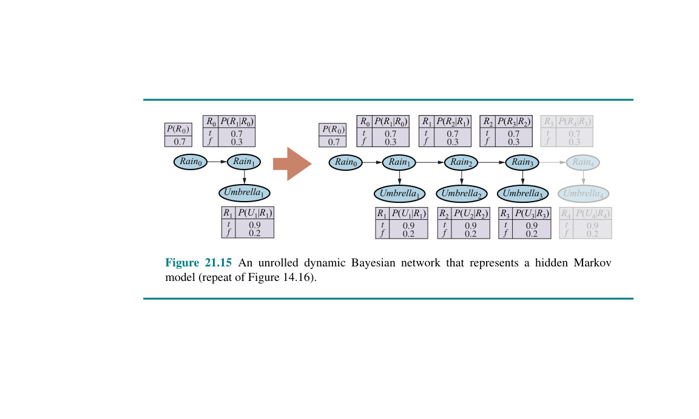
Chúng ta đã thấy cách học các mạng Bayes, nhưng có một sự phức tạp: trong các mạng Bayes, mỗi tham số là khác biệt; mặt khác, trong một mô hình Markov ẩn, các xác suất chuyển trạng thái riêng lẻ từ trạng thái $i$ sang trạng thái $j$ tại thời điểm $t$, $\theta_{ijt} = P(X_{t+1}=j | X_t=i)$, được lặp lại qua các thời điểm—tức là, $\theta_{ijt} = \theta_{ij}$ cho mọi $t$. Để ước lượng xác suất chuyển từ trạng thái $i$ sang trạng thái $j$, chúng ta chỉ cần tính toán tỷ lệ kỳ vọng của số lần hệ thống trải qua quá trình chuyển đổi sang trạng thái $j$ khi đang ở trạng thái $i$:
$$\theta_{ij} \leftarrow \frac{\sum_t \hat{N}(X_{t+1}=j, X_t=i)}{\sum_t \hat{N}(X_t=i)}$$
Các số đếm kỳ vọng được tính toán bởi một thuật toán suy diễn HMM. Thuật toán tới-lui (forward-backward) được hiển thị trong Hình 14.4 có thể được sửa đổi rất dễ dàng để tính toán các xác suất cần thiết. Một điểm quan trọng là các xác suất được yêu cầu có được thông qua việc làm trơn (smoothing) chứ không phải là lọc (filtering). Việc lọc cung cấp phân phối xác suất của trạng thái hiện tại cho trước quá khứ, nhưng việc làm trơn cung cấp phân phối cho trước tất cả bằng chứng, bao gồm cả những gì xảy ra sau khi một quá trình chuyển đổi cụ thể đã xảy ra. Bằng chứng trong một vụ án mạng thường thu được sau khi tội ác (tức là sự chuyển đổi từ trạng thái $i$ sang trạng thái $j$) đã diễn ra.
Chúng ta đã thấy một số ví dụ của thuật toán EM. Mỗi ví dụ liên quan đến việc tính toán các giá trị kỳ vọng của các biến ẩn cho mỗi mẫu dữ liệu và sau đó tính toán lại các tham số, sử dụng các giá trị kỳ vọng như thể chúng là các giá trị quan sát được. Gọi $\mathbf{x}$ là tất cả các giá trị quan sát được trong tất cả các ví dụ, gọi $\mathbf{Z}$ biểu thị cho tất cả các biến ẩn của tất cả các ví dụ, và gọi $\boldsymbol{\theta}$ là tất cả các tham số cho mô hình xác suất. Khi đó thuật toán EM là:
$$\boldsymbol{\theta}^{(i+1)} = \arg\max_{\boldsymbol{\theta}} \sum_{\mathbf{z}} P(\mathbf{Z}=\mathbf{z} | \mathbf{x}, \boldsymbol{\theta}^{(i)}) L(\mathbf{x}, \mathbf{Z}=\mathbf{z} | \boldsymbol{\theta})$$
Phương trình này tóm tắt thuật toán EM. Bước E là việc tính toán tổng, tức là kỳ vọng của log khả năng của dữ liệu "đã được hoàn thiện" đối với phân phối $P(\mathbf{Z}=\mathbf{z} | \mathbf{x}, \boldsymbol{\theta}^{(i)})$, đây là hậu nghiệm trên các biến ẩn, cho trước dữ liệu. Bước M là việc cực đại hóa log khả năng kỳ vọng này đối với các tham số. Đối với hỗn hợp các Gaussian, các biến ẩn là các $Z_{ij}$, trong đó $Z_{ij}$ là 1 nếu ví dụ $j$ được tạo ra bởi thành phần $i$. Đối với các mạng Bayes, $Z_{ij}$ là giá trị của biến chưa được quan sát $X_i$ trong ví dụ $j$. Đối với HMM, $Z_{jt}$ là trạng thái của chuỗi trong ví dụ $j$ tại thời điểm $t$. Bắt đầu từ dạng tổng quát, hoàn toàn có thể suy ra một thuật toán EM cho một ứng dụng cụ thể một khi các biến ẩn thích hợp đã được xác định.
Ngay khi chúng ta hiểu được ý tưởng chung của EM, việc suy ra tất cả các loại biến thể và cải tiến trở nên dễ dàng. Ví dụ, trong nhiều trường hợp, bước E—việc tính toán các hậu nghiệm trên các biến ẩn—là không thể xử lý được (intractable), chẳng hạn như trong các mạng Bayes lớn. Hóa ra người ta có thể sử dụng một bước E xấp xỉ mà vẫn thu được một thuật toán học hiệu quả. Với một thuật toán lấy mẫu như MCMC (xem Mục 13.4), quá trình học tập rất trực quan: mỗi trạng thái (cấu hình của các biến ẩn và quan sát được) được MCMC ghé thăm được đối xử hoàn toàn giống như thể nó là một quan sát hoàn chỉnh. Do đó, các tham số có thể được cập nhật trực tiếp sau mỗi quá trình chuyển đổi MCMC. Các hình thức suy diễn xấp xỉ khác, chẳng hạn như các phương pháp biến phân (variational methods) và lan truyền niềm tin có chu trình (loopy belief propagation), cũng đã được chứng minh là hiệu quả cho việc học các mạng rất lớn.
Trong Mục 21.2.7, chúng ta đã thảo luận về bài toán học các cấu trúc mạng Bayes với dữ liệu đầy đủ. Khi các biến chưa được quan sát ảnh hưởng đến dữ liệu quan sát được, mọi thứ trở nên khó khăn hơn. Trong trường hợp đơn giản nhất, một chuyên gia có thể nói cho thuật toán học biết rằng tồn tại một số biến ẩn nhất định, để lại cho thuật toán việc tìm một vị trí cho chúng trong cấu trúc mạng. Ví dụ, một thuật toán có thể cố gắng học cấu trúc được hiển thị trong Hình 21.11(a) ở trang 789, dựa trên thông tin rằng bệnh tim ($HeartDisease$ - một biến có ba giá trị) nên được bao gồm trong mô hình. Giống như trong trường hợp dữ liệu đầy đủ, thuật toán tổng thể có một vòng lặp bên ngoài tìm kiếm trên các cấu trúc và một vòng lặp bên trong khớp các tham số mạng cho trước cấu trúc.
Nếu thuật toán học không được cho biết biến ẩn nào tồn tại, thì có hai lựa chọn: hoặc là giả vờ rằng dữ liệu thực sự đầy đủ—điều này có thể buộc thuật toán phải học một mô hình thâm dụng tham số (parameter-intensive) chẳng hạn như mô hình trong Hình 21.11(b)—hoặc là phát minh (invent) ra các biến ẩn mới để đơn giản hóa mô hình. Cách tiếp cận thứ hai có thể được thực hiện bằng cách đưa vào các lựa chọn sửa đổi mới trong quá trình tìm kiếm cấu trúc: ngoài việc sửa đổi các liên kết, thuật toán có thể thêm hoặc xóa một biến ẩn hoặc thay đổi số lượng giá trị (arity) của nó. Tất nhiên, thuật toán sẽ không biết rằng biến mới mà nó phát minh ra được gọi là $HeartDisease$; nó cũng sẽ không có những cái tên có ý nghĩa cho các giá trị. May mắn thay, các biến ẩn mới được phát minh thường sẽ được kết nối với các biến đã tồn tại từ trước, vì vậy một chuyên gia con người thường có thể kiểm tra các phân phối có điều kiện cục bộ liên quan đến biến mới và xác định ý nghĩa của nó.
Giống như trong trường hợp dữ liệu đầy đủ, việc học cấu trúc theo hướng chỉ tối đa hóa khả năng sẽ dẫn đến một mạng được kết nối hoàn toàn (hơn nữa, là một mạng không có biến ẩn), do đó cần phải có một hình thức phạt độ phức tạp nào đó. Chúng ta cũng có thể áp dụng MCMC để lấy mẫu nhiều cấu trúc mạng có thể có, qua đó xấp xỉ việc học Bayes. Ví dụ: chúng ta có thể học hỗn hợp các Gaussian với số lượng thành phần chưa biết bằng cách lấy mẫu trên số lượng đó; phân phối hậu nghiệm xấp xỉ cho số lượng Gaussian được đưa ra bởi tần suất lấy mẫu của quá trình MCMC.
Đối với trường hợp dữ liệu đầy đủ, vòng lặp bên trong để học các tham số diễn ra rất nhanh—chỉ là vấn đề trích xuất các tần suất có điều kiện từ tập dữ liệu. Khi có các biến ẩn, vòng lặp bên trong có thể liên quan đến nhiều lần lặp lại EM hoặc một thuật toán dựa trên gradient, và mỗi lần lặp lại liên quan đến việc tính toán các hậu nghiệm trong một mạng Bayes, bản thân nó đã là một bài toán NP-khó. Cho đến nay, cách tiếp cận này đã được chứng minh là không thực tế đối với việc học các mô hình phức tạp.
Một cải tiến khả thi là thuật toán được gọi là EM cấu trúc (structural EM), hoạt động theo cách gần giống như thuật toán EM (tham số) thông thường ngoại trừ việc thuật toán có thể cập nhật cấu trúc cũng như các tham số. Giống như EM thông thường sử dụng các tham số hiện tại để tính toán số đếm kỳ vọng trong bước E và sau đó áp dụng các số đếm đó trong bước M để chọn các tham số mới, EM cấu trúc sử dụng cấu trúc hiện tại để tính toán số đếm kỳ vọng và sau đó áp dụng các số đếm đó trong bước M để đánh giá khả năng cho các cấu trúc mới tiềm năng. (Điều này trái ngược với phương pháp vòng-lặp-ngoài/vòng-lặp-trong, vốn tính toán số đếm kỳ vọng mới cho mỗi cấu trúc tiềm năng). Theo cách này, EM cấu trúc có thể thực hiện một vài thay đổi cấu trúc đối với mạng mà không cần tính toán lại số đếm kỳ vọng một lần nào, và có khả năng học các cấu trúc mạng Bayes không tầm thường. EM cấu trúc có một không gian tìm kiếm trên không gian các cấu trúc hơn là không gian các cấu trúc và tham số. Mặc dù vậy, vẫn còn nhiều việc phải làm trước khi chúng ta có thể nói rằng bài toán học cấu trúc đã được giải quyết.
Các phương pháp học thống kê trải dài từ việc tính toán trung bình đơn giản đến việc xây dựng các mô hình phức tạp như mạng Bayes. Chúng có các ứng dụng trong toàn bộ khoa học máy tính, kỹ thuật, sinh học tính toán, khoa học thần kinh, tâm lý học và vật lý học. Chương này đã trình bày một số ý tưởng cơ bản và đưa ra một chút hương vị về nền tảng toán học. Những điểm chính như sau:
Học thống kê tiếp tục là một lĩnh vực nghiên cứu rất tích cực. Những bước tiến khổng lồ đã được thực hiện trong cả lý thuyết và thực hành, đến mức có thể học được hầu như bất kỳ mô hình nào mà đối với nó, suy diễn chính xác hoặc xấp xỉ là khả thi.
Việc áp dụng các kỹ thuật học thống kê trong AI là một lĩnh vực nghiên cứu tích cực trong những năm đầu (xem Duda và Hart, 1973) nhưng đã trở nên tách biệt khỏi dòng chính của AI khi lĩnh vực này tập trung vào các phương pháp ký hiệu (symbolic methods). Sự quan tâm đã phục hồi ngay sau khi giới thiệu các mô hình mạng Bayes vào cuối những năm 1980; vào khoảng cùng thời điểm, một quan điểm thống kê về học mạng nơ-ron bắt đầu xuất hiện. Vào cuối những năm 1990, đã có một sự hội tụ đáng chú ý về các mối quan tâm trong học máy, thống kê và mạng nơ-ron, tập trung vào các phương pháp tạo ra các mô hình xác suất lớn từ dữ liệu.
Mô hình Naive Bayes là một trong những dạng cổ xưa và đơn giản nhất của mạng Bayes, có từ những năm 1950. Nguồn gốc của nó đã được đề cập trong Chương 12. Thành công đáng ngạc nhiên của nó được Domingos và Pazzani (1997) giải thích một phần. Một dạng tăng cường (boosted) của học Naive Bayes đã giành chiến thắng trong cuộc thi khai phá dữ liệu KDD Cup đầu tiên (Elkan, 1997). Heckerman (1998) cung cấp một lời giới thiệu xuất sắc về bài toán học mạng Bayes nói chung. Học tham số Bayes với các tiên nghiệm Dirichlet cho các mạng Bayes đã được Spiegelhalter và cộng sự (1993) thảo luận. Phân phối beta với tư cách là một tiên nghiệm liên hợp cho một biến Bernoulli lần đầu tiên được dẫn xuất bởi Thomas Bayes (1763) và sau đó được Karl Pearson (1895) giới thiệu lại như một mô hình cho dữ liệu bị lệch (skewed data); trong nhiều năm, nó được biết đến với tên gọi là "Phân phối Pearson Loại I". Hồi quy tuyến tính Bayes được thảo luận trong cuốn sách của Box và Tiao (1973); Minka (2010) cung cấp một bản tóm tắt súc tích về các đạo hàm cho trường hợp đa biến tổng quát.
Một số gói phần mềm tích hợp các cơ chế học thống kê với các mô hình mạng Bayes. Chúng bao gồm BUGS (Bayesian inference Using Gibbs Sampling) (Gilks và cộng sự, 1994; Lunn và cộng sự, 2000, 2013), JAGS (Just Another Gibbs Sampler) (Plummer, 2003) và STAN (Carpenter và cộng sự, 2017).
Các thuật toán đầu tiên để học cấu trúc mạng Bayes đã sử dụng các phép kiểm định tính độc lập có điều kiện (Pearl, 1988; Pearl và Verma, 1991). Spirtes và cộng sự (1993) đã hiện thực hóa một cách tiếp cận toàn diện trong gói TETRAD cho việc học mạng Bayes. Các cải tiến thuật toán kể từ đó đã dẫn đến một chiến thắng rõ ràng trong cuộc thi khai phá dữ liệu KDD Cup 2001 cho một phương pháp học mạng Bayes (Cheng và cộng sự, 2002). (Bài toán cụ thể ở đây là một bài toán tin sinh học với 139.351 đặc trưng!) Một phương pháp học cấu trúc dựa trên việc cực đại hóa khả năng (maximizing likelihood) đã được phát triển bởi Cooper và Herskovits (1992) và được cải tiến bởi Heckerman và cộng sự (1994).
Các thuật toán gần đây hơn đã đạt được hiệu suất khá đáng nể trong trường hợp dữ liệu đầy đủ (Moore và Wong, 2003; Teyssier và Koller, 2005). Một thành phần quan trọng là một cấu trúc dữ liệu hiệu quả, cây AD (AD-tree), dùng để lưu trữ bộ nhớ đệm (caching) các số đếm trên mọi kết hợp có thể có của các biến và các giá trị (Moore và Lee, 1997). Friedman và Goldszmidt (1996) đã chỉ ra tầm ảnh hưởng của việc biểu diễn các phân phối có điều kiện cục bộ đối với cấu trúc học được.
Bài toán tổng quát về việc học các mô hình xác suất có các biến ẩn và dữ liệu bị thiếu đã được Hartley (1958) giải quyết, người đã mô tả ý tưởng chung về những gì sau này được gọi là EM và đưa ra một vài ví dụ. Động lực thúc đẩy tiếp theo đến từ thuật toán Baum-Welch cho việc học HMM (Baum và Petrie, 1966), vốn là một trường hợp đặc biệt của EM. Bài báo của Dempster, Laird và Rubin (1977), bài trình bày thuật toán EM ở dạng tổng quát và phân tích sự hội tụ của nó, là một trong những bài báo được trích dẫn nhiều nhất trong cả khoa học máy tính và thống kê. (Bản thân Dempster coi EM như một lược đồ (schema) hơn là một thuật toán, vì có thể cần rất nhiều công việc toán học trước khi nó có thể được áp dụng cho một họ phân phối mới). McLachlan và Krishnan (1997) dành toàn bộ một cuốn sách cho thuật toán và các tính chất của nó. Bài toán cụ thể về việc học các mô hình hỗn hợp, bao gồm hỗn hợp của các Gaussian, được trình bày bởi Titterington và cộng sự (1985).
Trong AI, AUTOCLASS (Cheeseman và cộng sự, 1988; Cheeseman và Stutz, 1996) là hệ thống thành công đầu tiên sử dụng EM cho mô hình hỗn hợp. AUTOCLASS đã được áp dụng vào một số bài toán phân loại khoa học thế giới thực, bao gồm việc khám phá ra các loại sao mới từ dữ liệu quang phổ (Goebel và cộng sự, 1989) và các lớp protein và intron mới trong cơ sở dữ liệu chuỗi DNA/protein (Hunter và States, 1992).
Đối với việc học tham số hợp lý cực đại trong các mạng Bayes có biến ẩn, các phương pháp EM và phương pháp dựa trên gradient đã được Lauritzen (1995) và Russell cùng cộng sự (1995) đưa ra vào khoảng cùng thời điểm. Thuật toán EM cấu trúc được Friedman (1998) phát triển và áp dụng vào việc học hợp lý cực đại cấu trúc mạng Bayes có biến tiềm ẩn. Friedman và Koller (2003) mô tả việc học cấu trúc Bayes. Daly và cộng sự (2011) ôn tập lại lĩnh vực học mạng Bayes, cung cấp nhiều trích dẫn đến các tài liệu liên quan.
Khả năng học cấu trúc của các mạng Bayes gắn liền mật thiết với vấn đề khôi phục thông tin nhân quả từ dữ liệu. Tức là, liệu có thể học các mạng Bayes sao cho cấu trúc mạng được khôi phục chỉ ra những tác động nhân quả thực sự không? Trong nhiều năm, các nhà thống kê đã lảng tránh câu hỏi này, cho rằng dữ liệu quan sát được (trái ngược với dữ liệu được tạo ra từ các thử nghiệm) chỉ có thể mang lại thông tin về sự tương quan—xét cho cùng, bất kỳ hai biến nào có vẻ liên quan đều có thể thực sự bị ảnh hưởng bởi một yếu tố nhân quả thứ ba chưa biết chứ không phải ảnh hưởng trực tiếp lẫn nhau. Pearl (2000) đã đưa ra những lập luận thuyết phục về điều ngược lại, chỉ ra rằng trên thực tế có nhiều trường hợp có thể xác định được tính nhân quả và phát triển chủ nghĩa hình thức mạng lưới nhân quả để thể hiện các nguyên nhân và tác động của sự can thiệp cũng như các xác suất có điều kiện thông thường.
Ước lượng mật độ phi tham số, còn được gọi là ước lượng mật độ cửa sổ Parzen (Parzen window density estimation), đã được Rosenblatt (1956) và Parzen (1962) nghiên cứu ban đầu. Kể từ thời điểm đó, một lượng lớn tài liệu đã được phát triển để nghiên cứu tính chất của nhiều công cụ ước lượng khác nhau. Devroye (1987) đưa ra một lời giới thiệu toàn diện. Cũng đang có một khối lượng tài liệu ngày càng tăng nhanh chóng về các phương pháp Bayes phi tham số, bắt nguồn từ công trình có tính ảnh hưởng sâu sắc của Ferguson (1973) về quá trình Dirichlet (Dirichlet process), có thể được coi như một phân phối trên các phân phối Dirichlet. Các phương pháp này đặc biệt hữu ích cho các hỗn hợp có số lượng thành phần chưa biết. Ghahramani (2005) và Jordan (2005) cung cấp các hướng dẫn hữu ích về nhiều ứng dụng của những ý tưởng này đối với học thống kê. Cuốn sách của Rasmussen và Williams (2006) bao gồm quá trình Gaussian (Gaussian process), cung cấp một phương pháp để xác định các phân phối tiên nghiệm trên không gian của các hàm liên tục.
Các tài liệu trong chương này tập hợp các công trình từ các lĩnh vực thống kê và nhận dạng mẫu, vì vậy câu chuyện đã được kể lại nhiều lần theo nhiều cách khác nhau. Các văn bản hay về thống kê Bayes bao gồm sách của DeGroot (1970), Berger (1985), và Gelman cùng cộng sự (1995). Bishop (2007), Hastie cùng cộng sự (2009), Barber (2012) và Murphy (2012) cung cấp những lời giới thiệu xuất sắc về học máy thống kê. Đối với phân loại mẫu (pattern classification), văn bản kinh điển trong nhiều năm qua là của Duda và Hart (1973), nay đã được cập nhật (Duda cùng cộng sự, 2001). Hội nghị thường niên NeurIPS (Hệ thống Xử lý Thông tin Thần kinh, trước đây là NIPS), với kỷ yếu được xuất bản dưới tên gọi Tiến bộ trong Hệ thống Xử lý Thông tin Thần kinh (Advances in Neural Information Processing Systems), bao gồm nhiều bài báo về học Bayes, cũng giống như hội nghị thường niên về Trí tuệ Nhân tạo và Thống kê. Các địa điểm cụ thể về Bayes bao gồm Hội nghị Quốc tế Valencia về Thống kê Bayes và tạp chí Phân tích Bayes (Bayesian Analysis).